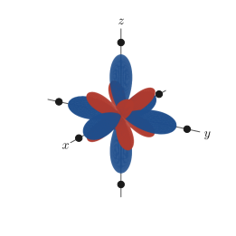
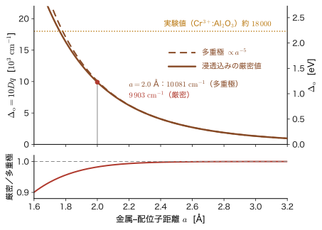
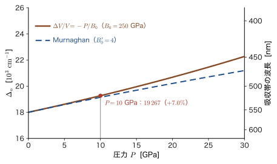
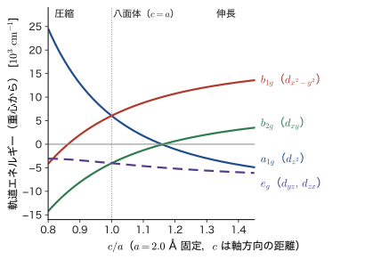
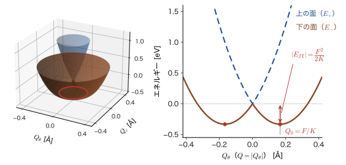

第44章立方対称場中の 1 個の d 電子 — $t_{2g}$ と $e_g$ への分裂
5 個の 3d 軌道は，結晶の中でどうなるだろうか．孤立した原子の中では 5 個の 3d 軌道は同じエネルギーをもつ（水素原子と同じ縮退，第16章）が，結晶の中では周りの酸化物イオン $\mathrm{O^{2-}}$ に取り囲まれるため，5 個の準位は 2 つの組に分かれる．分かれた準位の間隔が可視光の光子のエネルギー（約 2 eV）と同じ程度なので，特定の色の光だけが吸収され，ルビーは赤く，エメラルドは緑に見える（色の詳しい話は第48章）．遷移金属化合物の色，磁性，触媒作用，電池材料の性質は，すべてこの「d 準位の分裂」から始まる．
この章では，その最も単純な場合を，式を 1 行も飛ばさずに解く．金属イオンの 3d 軌道に電子が1 個だけあり，そのまわりに 6 個の配位子（イオンや分子）が正八面体の頂点の位置に並んでいるとする．配位子は負の点電荷で近似する．電子は配位子から静電的な反発力を受けるが，古典物理（AD 03 の静電気学，第35章 35.1節）ならば「点電荷の位置から遠ざかれば反発が弱くなる」というだけの話である．量子力学では，電子は 1 点にいるのではなく軌道 $\lvert\psi\rvert^2$ の形に広がっており，エネルギーは $\int\psi^*\hat{V}\psi\,\dd\tau$ で決まる．したがって軌道の向きが問題になる．配位子のほうを向いた軌道は損をし，配位子の間を向いた軌道は得をする．この「向きによる損得」を，縮退のある摂動論（第28章）で定量的に計算するのが本章の内容である．
答えは驚くほど単純になる．5 重縮退の d 準位は，2 重の $e_g$ と 3 重の $t_{2g}$ に分かれ，$e_g$ は $+6Dq$，$t_{2g}$ は $-4Dq$ だけずれ，その間隔（$10Dq$）は配位子までの距離 $a$ の 5 乗に反比例する．この結果は，後続の章で扱う群論（第45章），$d^n$ 配置の高スピン・低スピン（第46章），多電子項と田辺–菅野図（第47章），d–d 遷移と色（第48章）の出発点になる．
- 実数の d 軌道 5 個と，$e_g$・$t_{2g}$ という名前の意味．配位子を負の点電荷とみなしたときの 1 電子ポテンシャル $\hat{V}$ の立て方
- 6 個の点電荷のポテンシャルを $r/a$ で展開し，立方対称性から $k=0$（定数）と $k=4$ の項だけが残ること：$V_4=\dfrac{35}{4a^5}\dfrac{qe_0^2}{4\pi\varepsilon_0}\left(x^4+y^4+z^4-\dfrac35r^4\right)$
- 5×5 の永年方程式（縮退摂動論）が対角になること，$E(e_g)=+6Dq$，$E(t_{2g})=-4Dq$，$\Delta_o\equiv10Dq=\dfrac53\dfrac{qe_0^2\langle r^4\rangle}{4\pi\varepsilon_0a^5}$，重心則
- $Z_{\mathrm{eff}}=7$，$a=2.0$ Å，$q=2$ での数値例（約 $1.0\times10^4\ \mathrm{cm^{-1}}$．$\mathrm{cm^{-1}}$ は波数の単位で，$1\ \mathrm{eV}=8065.5\ \mathrm{cm^{-1}}$．44.4 節）と実験値との比較，$\Delta_o\propto a^{-5}$ と圧力の効果，点電荷模型の限界
- 立方体配位・四面体配位（$\Delta_t=\tfrac49\Delta_o$），正方対称 $D_{4h}$ の 4 準位（$Ds$，$Dt$）
- Jahn–Teller 効果：縮退した $e_g$ 軌道が電子で不均等に占有されると，結晶が自発的にひずむ．$E\otimes e$ 模型と $E_{\mathrm{JT}}=-F^2/2K$（安定化の大きさは $F^2/2K$）
もとにしたノート：望月泰英『物理学ノート 量子力学3』 pp. 67–68．
44.1 立方対称場中の 1 個の電子 — 八面体に並んだ 6 個の点電荷
44.1.1 復習：水素様の 3d 軌道
前章（第43章）で用意した水素様原子の 3d 状態（主量子数 $n=3$，方位量子数 $l=2$）を使う．金属イオンの 3d 電子が感じる核電荷は，内側の電子による遮蔽（第18章）のために，原子番号よりずっと小さい有効核電荷 $Z_{\mathrm{eff}}$ になる．3d 状態のエネルギーは $E_3=-13.6\ \mathrm{eV}\times Z_{\mathrm{eff}}^2/3^2$ で，磁気量子数 $m=-2,-1,0,1,2$ によらない．波動関数は動径部分と角度部分の積 $R_{32}(r)\,Y_2^m(\theta,\varphi)$ で，動径部分 $R_{32}(r)\propto\rho^2e^{-\rho/3}$（$\rho=Z_{\mathrm{eff}}r/a_0$）は前章（43.4.1）で求めた．5 個の状態はすべて同じエネルギーをもつ，すなわち 5 重に縮退している．
実数の d 軌道 5 個の定義と $Y_2^m$ との対応は，前章（43.4.3 の定義43.1）で与えた．ここでは，本章の計算で使う形と，$e_g$，$t_{2g}$ という名前を導入する．$\bm{n}=\bm{r}/r=(n_x,n_y,n_z)$ を動径方向の単位ベクトル（$n_x=\sin\theta\cos\varphi$ など）とする．
定義44.1 実数の d 軌道と $e_g$，$t_{2g}$
次の 5 個の関数を実数の d 軌道という（前章の定義43.1 と同じもの．いずれも $R_{32}(r)$ に角度部分を掛けたもの．角度部分は球面上で規格化されている）：
$$ \begin{aligned} d_{z^2}&=R_{32}(r)\sqrt{\tfrac{5}{16\pi}}\,(3n_z^2-1), \\ d_{x^2-y^2}&=R_{32}(r)\sqrt{\tfrac{15}{16\pi}}\,(n_x^2-n_y^2), \\ d_{xy}&=R_{32}(r)\sqrt{\tfrac{15}{4\pi}}\,n_xn_y, \\ d_{yz}&=R_{32}(r)\sqrt{\tfrac{15}{4\pi}}\,n_yn_z, \\ d_{zx}&=R_{32}(r)\sqrt{\tfrac{15}{4\pi}}\,n_zn_x. \end{aligned} $$このうち $d_{z^2}$ と $d_{x^2-y^2}$ の 2 個を $e_g$ 軌道，$d_{xy}$，$d_{yz}$，$d_{zx}$ の 3 個を $t_{2g}$ 軌道と呼ぶ．
名前の意味．$e$ と $t$ は「2 重に縮退した軌道」「3 重に縮退した軌道」を表す記号（Mulliken 記号）である．添字の $g$ はドイツ語の gerade（偶）の頭文字で，原点についての反転 $\bm{r}\to-\bm{r}$ で符号が変わらない軌道であることを表す（d 軌道の角度部分は $n_i$ の 2 次式なので確かに反転で不変）．$t_{2g}$ の 2 は，同じ $t_g$ でも別の対称性をもつ組（$t_{1g}$）と区別する番号である．これらの記号の群論的な意味は第45章で厳密に定義する．1 個の電子の軌道は小文字（$e_g$，$t_{2g}$），多電子の状態（項）は大文字（$E_g$，$T_{2g}$）で書く（第46章以降）．なお，$\{d_{xy},d_{yz},d_{zx}\}$ が同じ組にまとめられ，$d_{z^2}$ と $d_{x^2-y^2}$ が別の組にまとめられる理由は，44.3節の計算の中で明らかになる．
44.1.2 問題の設定
金属イオン（原点）の周りに，6 個の配位子（$\mathrm{O^{2-}}$，$\mathrm{F^-}$，水分子の酸素原子など）が正八面体の頂点の位置に並んでいる（図44.1）．配位子の位置ベクトルは
$$ \bm{R}_1=(a,0,0),\ \bm{R}_2=(-a,0,0),\ \bm{R}_3=(0,a,0),\ \bm{R}_4=(0,-a,0),\ \bm{R}_5=(0,0,a),\ \bm{R}_6=(0,0,-a) $$である．$a$ は金属−配位子の距離で，酸化物では約 2 Å（$=2\times10^{-10}\ \mathrm{m}$）である．配位子は電荷 $-q\,e_0$ をもつ点電荷とみなす（$e_0$ は電気素量，$q$ は配位子の電荷数で，$\mathrm{O^{2-}}$ なら $q=2$）．
電子（電荷 $-e_0$）と配位子 $i$（電荷 $-qe_0$）の間には Coulomb の法則による反発力がはたらき，その位置エネルギーは $(-e_0)(-qe_0)/(4\pi\varepsilon_0\lvert\bm{r}-\bm{R}_i\rvert)=+qe_0^2/(4\pi\varepsilon_0\lvert\bm{r}-\bm{R}_i\rvert)$ である（AD 03 第35章 35.1節）．6 個の配位子による位置エネルギーは，電位の重ね合わせ（第36章 36.8節）によって単純な和になる．以下では
\begin{equation} \Lambda\equiv\frac{q\,e_0^2}{4\pi\varepsilon_0} \label{eq:44-Lambda} \end{equation}と略記する（$\Lambda$ は「エネルギー×長さ」の次元をもち，$e_0^2/(4\pi\varepsilon_0)=14.3996\ \mathrm{eV}\,\text{Å}$ なので $\Lambda=q\times14.3996\ \mathrm{eV}\,\text{Å}$）．3d 電子の 1 電子ハミルトニアンは次のようになる：
\begin{equation} \hat{H}=\hat{H}_0+\hat{V},\qquad \hat{H}_0=-\frac{\hbar^2}{2m_{\mathrm e}}\nabla^2-\frac{Z_{\mathrm{eff}}e_0^2}{4\pi\varepsilon_0\,r},\qquad \hat{V}(\bm{r})=\Lambda\sum_{i=1}^{6}\frac{1}{\lvert\bm{r}-\bm{R}_i\rvert} \label{eq:44-H} \end{equation}$\hat{H}_0$ は前節の水素様の 3d 状態を固有状態にもつハミルトニアン，$\hat{V}$ が配位子の場である．$\hat{V}$ は座標 $\bm{r}=(x,y,z)$ の関数なので，演算子というより単なる掛け算である．
公式44.1 $e_g$ と $t_{2g}$ の間隔（この章の結論．44.3節で導く）
八面体の場の中の 3d 電子について，5 重に縮退した準位は 2 重の $e_g$ と 3 重の $t_{2g}$ に分かれ，その間隔は
\begin{equation} E(e_g)-E(t_{2g})=\frac{5}{3}\,\frac{q\,e_0^2}{4\pi\varepsilon_0}\,\frac{1}{a^5}\int_0^\infty r^4R_{32}^2(r)\,r^2\,\dd r=\frac53\,\frac{q\,e_0^2\,\langle r^4\rangle}{4\pi\varepsilon_0\,a^5} \label{eq:44-goal} \end{equation}である．$\langle r^4\rangle\equiv\int_0^\infty r^4R_{32}^2\,r^2\,\dd r$ は 3d 軌道の $r^4$ の平均値，係数 $5/3=1.666\cdots\approx1.67$ は，44.3節で角度積分から出てくる．
式 \eqref{eq:44-goal} は，見た目は単純だが，どこから来たのか（なぜ $1/a^5$ なのか，なぜ $5/3$ なのか，なぜ $r^4$ の平均値なのか）は自明ではない．本章の 44.2 節と 44.3 節で，これを 1 行ずつ導く．式 \eqref{eq:44-goal} の $1/a^5$ は，配位子までの距離 $a$ だけで決まる定数で，積分の中の $r^4$（電子の位置 $r$ の 4 乗）とは別の量である．
注意：$Z$，$q$，$Dq$ の $q$
この章には「電荷」を表す量が 3 つ出てくる．混同しないこと．(i) $Z_{\mathrm{eff}}$：中心の金属イオンの有効核電荷．3d 電子が感じる引力を決める．(ii) $q$：配位子の電荷数（配位子の電荷は $-qe_0$）．$\hat{V}$ の大きさを決める．(iii) $Dq$：44.3 節で定義する $e_g$・$t_{2g}$ の分裂の単位で，歴史的な記号である．$D$ と $q$ の積の形をしているが，この $q$ は電荷ではなく，動径積分に由来する量（$\tfrac{2}{105}\langle r^4\rangle$）である．本書では $Dq$ を 1 つの記号として使い，配位子の電荷は $q$ を $qe_0^2/(4\pi\varepsilon_0)$ または $\Lambda$ の中でだけ使う．
考察：なぜ摂動論でよいのか
配位子の場 $\hat{V}$ を「小さな摂動」として扱ってよいのだろうか．たとえば $q=2$，$a=2.0$ Å では，後で見るように $\hat{V}$ の球対称な部分だけで $6\Lambda/a\approx86$ eV にもなる．これは水素原子の基底状態のエネルギー（$-13.6$ eV）よりずっと大きい．しかし，この大きな部分は 5 個の d 軌道を同じだけ持ち上げる定数であり（44.2節），準位の間隔には効かない．間隔を決める球対称でない部分は，3d 内の分裂でいえば 1 eV 程度である．この部分が 3d 以外の状態を混ぜる効果は小さい．$\hat{V}$ の球対称でない部分は $l=4$ の成分 $V_4$（と $l\ge6$ の成分）だけなので（44.2節），$V_4$ が 3d（$l=2$）と結ぶのは，角運動量の合成則 $\lvert l-l'\rvert\le4\le l+l'$ を満たす偶パリティの励起状態，すなわち nd（$n\ge4$，$l'=2$），ng（$n\ge5$，$l'=4$），ni（$n\ge7$，$l'=6$）である．一方，4s（$l'=0$）と結ぶには $k=2$ の項が必要で，八面体では 0 なので混ざらず，4p は奇パリティで偶関数の $\hat{V}$ とは結ばれない（4s，4p が効くのは，配位子の軌道を介した共有結合を通じてである．44.4節）．nd，ng，ni との混合を 2 次摂動（第27章）で見積もると（$Z_{\mathrm{eff}}=7$ の水素様軌道，$a=2.0$ Å，$q=2$，束縛状態 $n\le14$ だけを数える），3d の中の分裂 $\Delta_o=1.25$ eV は約 0.08 eV（約 7%）小さくなる程度である．3d から 4d までの間隔が約 32 eV と大きいためで，連続状態への混合は含めていないので桁の見積りである．そこで，本章では次の近似を使う．
- $\hat{H}_0$ の縮退した 5 個の 3d 状態だけを取り出し，その中で $\hat{V}$ の行列 $V_{mm'}$ を作って対角化する（縮退のある 1 次摂動論．第28章）．他の $n,l$ の状態との混合（2 次以上の効果）は無視する．
- 配位子は大きさのない点電荷で，金属イオンの軌道と配位子の軌道の重なりや共有結合は考えない．
1 つ目の近似の大きさは上のとおりである．2 つ目の近似（配位子の軌道との重なりや共有結合を無視すること）の限界と，$r\lt a$ の展開の精度（電子が配位子の位置より外に出る浸透の影響）は，44.4節で調べる．縮退のある摂動論では，5 個の状態 $\ket{m}$ ($=R_{32}Y_2^m$) について 5×5 の行列 $V_{mm'}=\mel{m}{\hat{V}}{m'}$ をつくり，永年方程式 $\det(V_{mm'}-E^{(1)}\delta_{mm'})=0$ を解くと，1 次のエネルギー $E^{(1)}$ が 5 個得られる．
例題44.1 電子から配位子までの距離と $\hat{V}$ の対称性
電子が $\bm{r}=(0.2a,\,0.1a,\,0.3a)$ にあるとき，6 個の配位子までの距離の 2 乗 $\lvert\bm{r}-\bm{R}_i\rvert^2$ と，$\hat{V}$ の値を求めよ（$\Lambda/a$ を単位とする）．また，$\hat{V}(-\bm{r})=\hat{V}(\bm{r})$ と，$z$ 軸まわりの 90° 回転 $(x,y,z)\to(-y,x,z)$ で $\hat{V}$ が変わらないことを確かめよ．$q=2$，$a=2.0$ Å のとき $\hat{V}$ は何 eV か．
解答 $\lvert\bm{r}-\bm{R}\rvert^2=(\bm{r}-\bm{R})\cdot(\bm{r}-\bm{R})=r^2-2\bm{r}\cdot\bm{R}+R^2$ で，$R=a$ である．まず $r^2=(0.04+0.01+0.09)a^2=0.14a^2$．各配位子について $\bm{r}\cdot\bm{R}_i=\pm ax$（など）を使う：
$$ \begin{aligned} \bm{R}_1=(a,0,0):&\ \lvert\bm{r}-\bm{R}_1\rvert^2=(0.14-2\times0.2+1)a^2=0.74a^2, &\bm{R}_2=(-a,0,0):&\ (0.14+0.4+1)a^2=1.54a^2,\\ \bm{R}_3=(0,a,0):&\ (0.14-2\times0.1+1)a^2=0.94a^2, &\bm{R}_4=(0,-a,0):&\ (0.14+0.2+1)a^2=1.34a^2,\\ \bm{R}_5=(0,0,a):&\ (0.14-2\times0.3+1)a^2=0.54a^2, &\bm{R}_6=(0,0,-a):&\ (0.14+0.6+1)a^2=1.74a^2. \end{aligned} $$$1/\lvert\bm{r}-\bm{R}_i\rvert$ を $a^{-1}$ を単位として書くと，$1/\sqrt{0.74}=1.1625$，$1/\sqrt{1.54}=0.8058$，$1/\sqrt{0.94}=1.0314$，$1/\sqrt{1.34}=0.8639$，$1/\sqrt{0.54}=1.3608$，$1/\sqrt{1.74}=0.7581$ なので，和は $\hat{V}=5.9825\,\Lambda/a$ である．$q=2$，$a=2.0$ Å なら $\Lambda/a=2\times14.3996\ \mathrm{eV}\,\text{Å}/2.0\ \text{Å}=14.40\ \mathrm{eV}$ だから $\hat{V}=86.15\ \mathrm{eV}$ である．
反転 $\bm{r}\to-\bm{r}$ では，$\bm{r}\cdot\bm{R}_i$ の符号が変わるので $\lvert\bm{r}-\bm{R}_1\rvert^2$ と $\lvert\bm{r}-\bm{R}_2\rvert^2$ が入れ替わる（$\bm{R}_3\leftrightarrow\bm{R}_4$，$\bm{R}_5\leftrightarrow\bm{R}_6$ も同様）．距離の 2 乗の 6 個の集合 $\{0.74,1.54,0.94,1.34,0.54,1.74\}a^2$ は変わらないから，和 $\hat{V}$ は変わらない．90° 回転後の点は $(-0.1a,0.2a,0.3a)$ で，同じ計算をすると $\lvert\bm{r}'-\bm{R}_i\rvert^2/a^2=1.34,\ 0.94,\ 0.74,\ 1.54,\ 0.54,\ 1.74$ となり，同じ 6 個の数が並び方だけ変わる．したがって $\hat{V}$ の値は同じである．これは，配位子の集合が反転と 90° 回転で自分自身に重なる（配位子どうしが入れ替わるだけ）からである．
44.2 立方対称ポテンシャルの展開 — $x^4+y^4+z^4-\tfrac35r^4$
式 \eqref{eq:44-H} の $\hat{V}$ は，6 個の $1/\lvert\bm{r}-\bm{R}_i\rvert$ の和である．これをそのまま 3d 軌道で積分するのは大変だが，電子が配位子よりずっと内側にいる（$r\lt a$）ことを使うと，$r/a$ の冪級数に展開できる．すると，八面体という対称性のおかげで，無数にある項のほとんどが消えて，たった 2 つの項だけが残る．
数学の道具：Legendre の多項式の母関数
Legendre の多項式 $P_k(u)$（大学数学 第40章 40.4）は，$\lvert t\rvert\lt1$ で
\begin{equation} \frac{1}{\sqrt{1-2ut+t^2}}=\sum_{k=0}^{\infty}P_k(u)\,t^k \label{eq:44-gen} \end{equation}と展開したときの $t^k$ の係数として定義できる（母関数）．低次の項を確かめておこう．$(1+x)^{-1/2}=1-\tfrac12x+\tfrac38x^2-\cdots$ に $x=-2ut+t^2$ を代入すると，$1+\tfrac12(2ut-t^2)+\tfrac38(2ut-t^2)^2+\cdots=1+ut+\tfrac12(3u^2-1)t^2+\cdots$ となり，$P_0=1$，$P_1=u$，$P_2=\tfrac12(3u^2-1)$ が出る．さらに高次の項は Rodrigues の公式 $P_k(u)=\dfrac{1}{2^kk!}\dfrac{\mathrm{d}^k}{\mathrm{d}u^k}(u^2-1)^k$ から得られる．たとえば $k=4$ では，$(u^2-1)^4=u^8-4u^6+6u^4-4u^2+1$ を 4 回微分して $1680u^4-1440u^2+144$ となり，これを $2^44!=384$ で割ると $P_4$ が出る．以下で使う $P_3$，$P_4$，$P_6$ は
$$ P_3(u)=\tfrac12(5u^3-3u),\quad P_4(u)=\tfrac18(35u^4-30u^2+3),\quad P_6(u)=\tfrac1{16}(231u^6-315u^4+105u^2-5) $$である．奇数次は $P_k(-u)=-P_k(u)$（奇関数），偶数次は $P_k(-u)=P_k(u)$（偶関数）である．
導出：6 個の点電荷の場の展開
(a) 1 個の点電荷．原点から距離 $R$ にある点電荷を考え，電子の位置 $\bm{r}$ とのなす角を $\gamma$ とする．余弦定理より $\lvert\bm{r}-\bm{R}\rvert^2=R^2-2rR\cos\gamma+r^2$ である．$t=r/R$，$u=\cos\gamma$ とおくと $\lvert\bm{r}-\bm{R}\rvert=R\sqrt{1-2ut+t^2}$ だから，式 \eqref{eq:44-gen} より（$r\lt R$ のとき）
\begin{equation} \frac{1}{\lvert\bm{r}-\bm{R}\rvert}=\frac1R\sum_{k=0}^{\infty}\left(\frac rR\right)^kP_k(\cos\gamma)=\sum_{k=0}^{\infty}\frac{r^k}{R^{k+1}}P_k(\cos\gamma) \label{eq:44-legendre} \end{equation}(b) 6 個の配位子．$R=a$ とし，配位子の方向 $\bm{R}_i/a$ が $\pm\bm{e}_x,\pm\bm{e}_y,\pm\bm{e}_z$ であることを使う．電子の方向の単位ベクトルを $\bm{n}=\bm{r}/r=(n_x,n_y,n_z)$ とすると，$\cos\gamma_i=\bm{n}\cdot\bm{R}_i/a$ は $\pm n_x,\ \pm n_y,\ \pm n_z$ のどれかである．式 \eqref{eq:44-legendre} を 6 個について足すと
\begin{equation} \hat{V}=\Lambda\sum_{k=0}^{\infty}\frac{r^k}{a^{k+1}}S_k(\bm{n}),\qquad S_k(\bm{n})\equiv\sum_{i=1}^{6}P_k(\cos\gamma_i)=\sum_{s=\pm1}\bigl[P_k(sn_x)+P_k(sn_y)+P_k(sn_z)\bigr] \label{eq:44-Sk} \end{equation}(c) $k$ ごとに $S_k$ を計算する．
- $k=0$：$P_0=1$ なので $S_0=6$．
- $k$ が奇数：$P_k(-u)=-P_k(u)$ なので，$+\bm{R}$ と $-\bm{R}$ の配位子の寄与が打ち消し合い，$S_1=S_3=S_5=\cdots=0$．
- $k=2$：$P_2(\pm n_i)=\tfrac12(3n_i^2-1)$ を 6 個足すと $S_2=2\times\tfrac12\bigl[3(n_x^2+n_y^2+n_z^2)-3\bigr]=3\cdot1-3=0$．ここで $n_x^2+n_y^2+n_z^2=1$ を使った．
- $k=4$：$P_4(\pm n_i)=\tfrac18(35n_i^4-30n_i^2+3)$ を 6 個足す： $$ S_4=\frac{2}{8}\Bigl[35(n_x^4+n_y^4+n_z^4)-30(n_x^2+n_y^2+n_z^2)+3\times3\Bigr]=\frac14\Bigl[35\,s_4-30+9\Bigr]=\frac{35s_4-21}{4},\qquad s_4\equiv n_x^4+n_y^4+n_z^4 $$
- $k=6$：$P_6(\pm n_i)=\tfrac1{16}(231n_i^6-315n_i^4+105n_i^2-5)$ を 6 個足すと，$S_6=\tfrac{2}{16}\bigl[231s_6-315s_4+105\cdot1-5\cdot3\bigr]=\tfrac18(231s_6-315s_4+90)=\tfrac38\bigl(77s_6-105s_4+30\bigr)$（$s_6\equiv n_x^6+n_y^6+n_z^6$．$n_x^2+n_y^2+n_z^2=1$ を使った）．
(d) $k=4$ の項の整理．$r^4s_4=x^4+y^4+z^4$ なので，$k=4$ の項は
$$ \Lambda\frac{r^4}{a^5}\cdot\frac{35s_4-21}{4}=\frac{35\Lambda}{4a^5}\left(r^4s_4-\frac{21}{35}r^4\right)=\frac{35\Lambda}{4a^5}\left(x^4+y^4+z^4-\frac35r^4\right) $$(e) $k=6$ の項．$\Lambda\dfrac{r^6}{a^7}S_6=\dfrac{3\Lambda r^6}{8a^7}\bigl(77s_6+30-105s_4\bigr)$ で，定理44.1 の $V_6$ になる（$V_6$ は 3d 軌道の行列要素に効かない．下の囲み）．
（導出終わり）
定理44.1 八面体の場の展開
正八面体の頂点にある 6 個の点電荷（電荷 $-qe_0$，距離 $a$）が $r\lt a$ の点につくる電子のポテンシャルエネルギーは，$\Lambda=qe_0^2/(4\pi\varepsilon_0)$ として
\begin{equation} \hat{V}=\underbrace{\frac{6\Lambda}{a}}_{V_0}+\underbrace{\frac{35\Lambda}{4a^5}\left(x^4+y^4+z^4-\frac35r^4\right)}_{V_4}+V_6+V_8+\cdots \label{eq:44-Vexp} \end{equation}である（$V_0,V_4,\ldots$ は展開の各項で，座標の関数を掛けるだけの演算子なのでハットは付けない）．$k=1,2,3,5,7,\ldots$ の項は消える．$k=6$ の項は $V_6=\dfrac{3\Lambda r^6}{8a^7}\bigl(77s_6+30-105s_4\bigr)$（$s_6\equiv n_x^6+n_y^6+n_z^6$）で，$k\ge6$ の項は 3d 軌道の行列要素にはまったく寄与しない（下の囲みを見よ）．
数学の道具：d 軌道の行列要素には $k\le4$ の項しか効かない理由
3d 軌道どうしの行列要素 $\mel{R_{32}Y_2^m}{\hat{V}_k}{R_{32}Y_2^{m'}}$ は，動径部分と角度部分に分けられ，角度部分は $\int Y_2^{m*}\,S_k(\bm{n})\,Y_2^{m'}\,\dd\Omega$ の形になる．d 軌道の角度部分は $n_x,n_y,n_z$ の 2 次式なので，$Y_2^{m*}Y_2^{m'}$ は（球面 $n_x^2+n_y^2+n_z^2=1$ の上で）高々 4 次の多項式である．一方，$S_k(\bm{n})$ は $k$ 次の球面調和関数（$Y_k^q$ の線形結合．Legendre 関数の加法定理）で，$Y_k^q$ は $k\ne l$ の $Y_l^{q'}$ と直交する．4 次以下の多項式は $l\le4$ の球面調和関数だけで展開できるから，$k\ge5$ の項との積分はすべて 0 になる．奇数の $k$ は反転対称性（d 軌道は偶関数）からも 0 である．したがって 3d の中の行列要素には $k=0,2,4$ だけが効き，$k=6$ 以上は近似ではなく厳密に 0 である．f 軌道（$l=3$）なら $k=6$ まで，p 軌道（$l=1$）なら $k=2$ まで効く．
44.2.1 各項の意味
$k=0$ の項 $V_0=6\Lambda/a$．$r$ にも方向にもよらない定数である．物理的には，6 個の電荷を原点を中心とする半径 $a$ の球殻の上に一様に塗り広げたときの，球殻の内側の電位に等しい（AD 03 第36章 36.5節：一様に帯電した球殻の内側では電位は一定で，その値は（全電荷）$/(4\pi\varepsilon_0a)$ である）．定数は 5 個の d 軌道のエネルギーを同じだけずらすだけで，準位の間隔は変えない．
$k=2$ の項が消えること．$k=2$ の項は，電荷分布の「4 重極モーメント」による項で，$x,y,z$ 軸を特別扱いする成分（たとえば $3z^2-r^2$）を含む．八面体では $x,y,z$ の 3 つの軸が完全に対等なので，そのような成分は消える．配位子が正方形（$x,y$ 軸上の 4 個）のときには $z$ 軸だけが特別になるので，$k=2$ の項が復活する（44.5 節と演習44.1）．
$k=4$ の項 $V_4$．$V_4$ を $r=r\bm{n}$ として書くと $V_4=\dfrac{35\Lambda r^4}{4a^5}\bigl(n_x^4+n_y^4+n_z^4-\tfrac35\bigr)$ である．電子が軸方向（配位子の方向）にいるとき $\bm{n}=(1,0,0)$ で $s_4=1$ となり，括弧の中身は $\tfrac{35}{4}(1-\tfrac35)=\tfrac72$ で正（電子のエネルギーが上がる）．体対角線の方向 $\bm{n}=(1,1,1)/\sqrt3$ では $s_4=3\times\tfrac19=\tfrac13$ で，$\tfrac{35}{4}(\tfrac13-\tfrac35)=-\tfrac73$ と負になる．面対角線の方向 $(1,1,0)/\sqrt2$ では $s_4=\tfrac12$ で $-\tfrac78$ である．電子が配位子に近づく向きにいるとエネルギーが高くなり，配位子から遠い向き（8 個ある体対角線の方向）にいるとエネルギーが低くなる．この角度依存性を図44.2 に示す．

イメージ：$V_4$ は「立方対称な，$l=4$ の球面調和関数」
$V_4$ の角度部分は，4 次の球面調和関数 $Y_4^m$ の特別な線形結合である．実際，
\begin{equation} x^4+y^4+z^4-\frac35r^4=\frac{4\sqrt\pi}{15}\,r^4\left[Y_4^0+\sqrt{\frac{5}{14}}\left(Y_4^4+Y_4^{-4}\right)\right] \label{eq:44-cubicharm} \end{equation}が成り立つ（括弧の中を「立方調和関数」という）．確かめてみよう．$Y_4^0=\dfrac{3}{16\sqrt\pi}(35\cos^4\theta-30\cos^2\theta+3)$，$Y_4^{\pm4}=\dfrac{3}{16}\sqrt{\dfrac{35}{2\pi}}\sin^4\theta\,e^{\pm4i\varphi}$ を使い，3 つの方向で両辺を比べる（$r=1$）．(i) $\bm{n}=(0,0,1)$：左辺は $1-\tfrac35=\tfrac25$．右辺は $Y_4^0=\tfrac{3}{2\sqrt\pi}$，$Y_4^{\pm4}=0$ なので $\tfrac{4\sqrt\pi}{15}\cdot\tfrac{3}{2\sqrt\pi}=\tfrac25$．(ii) $\bm{n}=(1,0,0)$（$\theta=\pi/2$，$\varphi=0$）：左辺は $\tfrac25$．右辺は $Y_4^0=\tfrac{9}{16\sqrt\pi}$，$Y_4^4+Y_4^{-4}=\tfrac38\sqrt{\tfrac{35}{2\pi}}$，$\sqrt{\tfrac5{14}}\sqrt{\tfrac{35}{2\pi}}=\tfrac{5}{2\sqrt\pi}$ より，括弧の中は $\tfrac{9}{16\sqrt\pi}+\tfrac{15}{16\sqrt\pi}=\tfrac{3}{2\sqrt\pi}$ で，やはり $\tfrac25$．(iii) $\bm{n}=(1,1,1)/\sqrt3$（$\cos^2\theta=\tfrac13$，$\sin^4\theta=\tfrac49$，$\varphi=\pi/4$ で $e^{\pm4i\varphi}=-1$）：左辺は $\tfrac13-\tfrac35=-\tfrac4{15}$．右辺は $Y_4^0=-\tfrac{7}{12\sqrt\pi}$，$\sqrt{\tfrac5{14}}(Y_4^4+Y_4^{-4})=-\tfrac{5}{12\sqrt\pi}$ なので括弧の中は $-\tfrac1{\sqrt\pi}$ で，$\tfrac{4\sqrt\pi}{15}\times(-\tfrac1{\sqrt\pi})=-\tfrac4{15}$．3 点で一致し，ほかの方向でも数値的に確かめてある．$Y_4^0$ は $z$ 軸が特別な形（縦長の葉）で，$Y_4^{\pm4}$ は $x$ 軸と $y$ 軸の方向に葉をもつ．この 3 つを $\sqrt{5/14}$ の重みで混ぜると，$x,y,z$ 軸が完全に対等になる．つまり八面体の場は，$l=4$ の球面調和関数のうち「八面体の全対称操作で不変」なただ 1 つの成分だけをもつ．群論の言葉ではこれが全対称表現 $A_{1g}$ の成分であり，このため $V_4$ が 3d 軌道の縮退を全部は解かず，「$e_g$ と $t_{2g}$」の 2 つの組に分ける（第45章）．また，$V_4$ の球面全体での平均は 0 である（$n_x^4$ の球面平均が $1/5$ なので $\tfrac15\times3-\tfrac35=0$）．これは，$V_4$ が $l=4$ の成分しか含まず，$l=0$（球対称）の成分をもたないことの現れである．
例題44.2 $k=0$ の項の大きさ
$q=2$（$\mathrm{O^{2-}}$），$a=2.0$ Å のとき，$V_0=6\Lambda/a$ は何 eV か．この大きさを水素原子の基底状態のエネルギーと比べ，なぜこの定数が準位の分裂に関係しないのかを述べよ．
解答 $e_0^2/(4\pi\varepsilon_0)=14.3996\ \mathrm{eV}\,\text{Å}$（$=E_{\mathrm h}a_0=27.2114\ \mathrm{eV}\times0.529177\ \text{Å}$）なので $\Lambda=2\times14.3996=28.799\ \mathrm{eV}\,\text{Å}$．よって
$$ V_0=\frac{6\Lambda}{a}=\frac{6\times28.799\ \mathrm{eV}\,\text{Å}}{2.0\ \text{Å}}=86.4\ \mathrm{eV} $$である．水素原子の基底状態のエネルギー $-13.6$ eV の 6 倍以上の大きさである．しかし $V_0$ は $r$ にも方向にもよらない定数なので，$\hat{H}_0+V_0$ の固有状態は $\hat{H}_0$ の固有状態のままで，固有値が全部 $V_0$ だけ大きくなるだけである．5 個の 3d 軌道のエネルギーが同じだけ動くのだから，準位の間隔は変わらない．なお実際の結晶では，この定数は配位子だけでなく周りの全イオンがつくる静電ポテンシャル（Madelung ポテンシャル．結晶全体の点電荷の和がつくる電位）の一部として扱われ，色や磁性には現れない．
例題44.3 展開の収束を数値で確かめる
電子が $\bm{r}=(0.3a,\,0.2a,\,0.1a)$ にあるとき，式 \eqref{eq:44-Vexp} の $V_0+V_4$ と $V_6$ を計算し，例題44.1 と同様に求めた厳密値と比べよ（単位 $\Lambda/a$）．
解答 $r^2=(0.09+0.04+0.01)a^2=0.14a^2$，$r^4=0.0196a^4$，$x^4+y^4+z^4=(0.0081+0.0016+0.0001)a^4=0.0098a^4$．$V_4$ の括弧の中は $0.0098-\tfrac35\times0.0196=0.0098-0.01176=-0.00196$（単位 $a^4$）なので
$$ V_4=\frac{35}{4}\times(-0.00196)\,\frac{\Lambda}{a}=-0.01715\,\frac{\Lambda}{a},\qquad V_0+V_4=(6-0.01715)\frac\Lambda a=5.98285\,\frac\Lambda a $$$k=6$ の項は，$x^6+y^6+z^6=(0.000729+0.000064+0.000001)a^6=0.000794a^6$，$r^6=0.002744a^6$ より $s_6=0.28936$，$s_4=0.5$ なので，$V_6=\tfrac38\times r^6/a^6\times(77\times0.28936+30-105\times0.5)\,\Lambda/a=\tfrac38\times0.002744\times(-0.2193)\,\Lambda/a=-0.000226\,\Lambda/a$．したがって $V_0+V_4+V_6=5.98262\,\Lambda/a$．
厳密値は，座標の入れ替え $(0.3,0.2,0.1)\to(0.2,0.1,0.3)$ が配位子の入れ替えにすぎないから例題44.1 と同じ $5.98251\,\Lambda/a$ である．$V_0+V_4$ だけで厳密値との差は $3.4\times10^{-4}$（相対誤差 $6\times10^{-5}$），$V_6$ まで入れると $1.1\times10^{-4}$ に縮まる．電子が原点付近（$r\approx0.37a$）にある限り，展開は速く収束する．また，球対称でない部分 $V_4$（$-0.017$）は定数部分（6）の 0.3% にすぎないが，準位の間隔を決めるのはこの小さな部分である．
(2) 導出の確認．$S_4=\tfrac14(35s_4-21)$ を，$P_4$ の和から直接計算して確かめよう．方向 $(1,0,0)$（配位子の方向）では，6 個の $\cos\gamma_i$ は $\pm1$ が 2 個，$0$ が 4 個で，$P_4(\pm1)=1$，$P_4(0)=\tfrac38$ から $S_4=2\times1+4\times\tfrac38=\tfrac72$．式の $\tfrac14(35\cdot1-21)=\tfrac72$ に一致する．方向 $(1,1,1)/\sqrt3$（体対角線）では，6 個の $\cos\gamma_i$ がすべて $\pm1/\sqrt3$ で，$P_4(\pm\tfrac1{\sqrt3})=\tfrac18\bigl(\tfrac{35}9-10+3\bigr)=-\tfrac7{18}$ から $S_4=6\times(-\tfrac7{18})=-\tfrac73$．式の $\tfrac14(35\cdot\tfrac13-21)=-\tfrac73$ に一致する．この 2 つの値は，44.2.1 節の軸方向 $+\tfrac72$，体対角線方向 $-\tfrac73$（単位 $\Lambda r^4/a^5$）そのものである．
44.3 5×5 の永年方程式 — $e_g$ と $t_{2g}$ への分裂と $Dq$
44.3.1 行列要素の組み立て
縮退のある 1 次摂動論（第28章）にしたがい，縮退した 5 個の状態 $\{d_{z^2},d_{x^2-y^2},d_{xy},d_{yz},d_{zx}\}$（定義44.1）の中で $\hat{V}$ の行列を作る．実数の軌道を使うと行列も実対称になる．行列要素は，動径部分 $R_{32}(r)$ と角度部分 $\Omega_i(\bm{n})$（定義44.1 の角度部分）に分けて計算できる：$d_i=R_{32}(r)\,\Omega_i(\bm{n})$．式 \eqref{eq:44-Vexp} を代入し，$k=2$ と $k\ge6$ の項が 0 であること（44.2 節）を使うと
\begin{equation} V_{ij}\equiv\mel{d_i}{\hat{V}}{d_j}=\frac{6\Lambda}{a}\,\delta_{ij}+\frac{35\Lambda}{4a^5}\,\langle r^4\rangle\,A_{ij},\qquad A_{ij}\equiv\int\Omega_i(\bm{n})\,W(\bm{n})\,\Omega_j(\bm{n})\,\dd\Omega \label{eq:44-Vij} \end{equation}である．ここで $\dd\Omega=\sin\theta\,\dd\theta\,\dd\varphi$ は単位球面上の面積要素，$W(\bm{n})\equiv n_x^4+n_y^4+n_z^4-\tfrac35$ は $V_4$ の角度部分，$\langle r^4\rangle=\int_0^\infty r^4R_{32}^2\,r^2\,\dd r$ は動径積分である．第 1 項は $\int\Omega_i\Omega_j\dd\Omega=\delta_{ij}$（軌道の直交規格化）を使った．動径積分と角度積分が完全に分離しているので，5×5 の行列の形は角度積分 $A_{ij}$ だけで決まり，動径部分（つまり原子の種類，$Z_{\mathrm{eff}}$）は全体の大きさを決めるだけである．このため，$e_g$ と $t_{2g}$ の分裂のパターンは，3d 軌道の詳しい形によらず，八面体の対称性だけから決まる．
44.3.2 非対角要素はすべて 0
まず，$i\ne j$ の要素 $A_{ij}$ が 0 になることを示す．考え方は，「積分の変数を取り替えても積分の値は変わらない」ことと，「$W$ が座標の反転や交換で不変」であることの組み合わせである．
導出：$A_{ij}=0$（$i\ne j$）
(1) 鏡映による符号．$W=n_x^4+n_y^4+n_z^4-\tfrac35$ は，$n_x\to-n_x$ でも $n_y\to-n_y$ でも $n_z\to-n_z$ でも変わらない（4 乗なので）．球面上の積分は，積分変数を $n_x\to-n_x$ と置き換えても値が変わらない．したがって，$n_x\to-n_x$ でその符号が反転する軌道と反転しない軌道の間の行列要素 $A_{ij}$ は，「自分自身のマイナス倍」に等しく，0 でなければならない．各軌道の角度部分が 3 つの鏡映 $(n_x\to-n_x,\ n_y\to-n_y,\ n_z\to-n_z)$ で受ける符号は次のとおりである：
| 軌道 | $n_x\to-n_x$ | $n_y\to-n_y$ | $n_z\to-n_z$ |
|---|---|---|---|
| $d_{z^2}$，$d_{x^2-y^2}$ | $+$ | $+$ | $+$ |
| $d_{xy}$（$\propto n_xn_y$） | $-$ | $-$ | $+$ |
| $d_{yz}$（$\propto n_yn_z$） | $+$ | $-$ | $-$ |
| $d_{zx}$（$\propto n_zn_x$） | $-$ | $+$ | $-$ |
$d_{xy}$，$d_{yz}$，$d_{zx}$ の符号の組は互いに異なり，$\{d_{z^2},d_{x^2-y^2}\}$ の組とも異なる．したがって，これら 3 個の $t_{2g}$ 軌道の間の要素，および $t_{2g}$ と $e_g$ の間の要素はすべて 0 である．
(2) $d_{z^2}$ と $d_{x^2-y^2}$ の間．この 2 つは鏡映の符号が同じなので (1) では消せない．そこで $x$ と $y$ の入れ替え $n_x\leftrightarrow n_y$（平面 $x=y$ に関する鏡映）を使う．$W$ は $n_x\leftrightarrow n_y$ で不変，$d_{z^2}$ の角度部分 $3n_z^2-1$ も不変だが，$d_{x^2-y^2}$ の角度部分 $n_x^2-n_y^2$ は符号が変わる．よって $A_{z^2,\,x^2-y^2}=-A_{z^2,\,x^2-y^2}$，すなわち 0 である．
（導出終わり）
例題44.4 非対角要素を積分の形で確かめる
$A_{xy,\,yz}=0$ と $A_{z^2,\,x^2-y^2}=0$ を，被積分関数を書き下して確かめよ．
解答 $A_{xy,\,yz}=\sqrt{\tfrac{15}{4\pi}}\sqrt{\tfrac{15}{4\pi}}\int n_xn_y\cdot n_yn_z\,W\,\dd\Omega=\dfrac{15}{4\pi}\int n_x\,n_y^2\,n_z\,W\,\dd\Omega$．被積分関数のうち $n_y^2$ と $W$ は $n_x\to-n_x$ で不変だが $n_x$ は符号を変えるので，被積分関数は $n_x$ について奇関数である．球面は $n_x\to-n_x$ で自分自身に重なるから，積分は 0 になる．
$A_{z^2,\,x^2-y^2}=\sqrt{\tfrac{5}{16\pi}}\sqrt{\tfrac{15}{16\pi}}\int(3n_z^2-1)(n_x^2-n_y^2)\,W\,\dd\Omega$．積分変数の名前を $n_x\leftrightarrow n_y$ と付け替えると，$(3n_z^2-1)$ と $W$ は変わらず $(n_x^2-n_y^2)\to-(n_x^2-n_y^2)$ となるから，積分 $=-$積分．よって 0 である．
44.3.3 対角要素の計算
次に対角要素 $A_{ii}$ を計算する．$d_{z^2}$ は $\theta$ だけの関数なので簡単に積分できる．他の軌道には，単位球面上の単項式の平均を使う．
数学の道具：球面上の単項式の平均
単位球面上の平均を $\langle\cdots\rangle_\Omega=\frac{1}{4\pi}\int\cdots\dd\Omega$ と書く．$n_x,n_y,n_z$ のどれかが奇数乗のときは反転対称性から 0 で，すべて偶数乗のときは
\begin{equation} \bigl\langle n_x^{2\alpha}\,n_y^{2\beta}\,n_z^{2\gamma}\bigr\rangle_\Omega=\frac{(2\alpha-1)!!\,(2\beta-1)!!\,(2\gamma-1)!!}{(2\alpha+2\beta+2\gamma+1)!!} \label{eq:44-momf} \end{equation}である（$(-1)!!=1$，$(2n-1)!!=(2n-1)(2n-3)\cdots3\cdot1$）．これは，3 次元空間で $\int x^{2\alpha}y^{2\beta}z^{2\gamma}e^{-r^2}\dd^3r$ を，直交座標では $\Gamma(\alpha+\tfrac12)\Gamma(\beta+\tfrac12)\Gamma(\gamma+\tfrac12)$，極座標では $\langle\cdots\rangle_\Omega\times4\pi\int_0^\infty r^{2s+2}e^{-r^2}\dd r$（$s=\alpha+\beta+\gamma$）と 2 通りに計算して比べれば導かれる（Gauss 積分と $\Gamma$ 関数の公式 $\Gamma(n+\tfrac12)=\dfrac{(2n-1)!!}{2^n}\sqrt\pi$）．たとえば
$$ \langle n_x^2\rangle=\tfrac13,\quad \langle n_x^4\rangle=\tfrac15,\quad \langle n_x^2n_y^2\rangle=\tfrac1{15},\quad \langle n_x^6n_y^2\rangle=\tfrac1{63},\quad \langle n_x^8\rangle=\tfrac19,\quad \langle n_x^4n_y^4\rangle=\tfrac1{105},\quad \langle n_x^2n_y^2n_z^4\rangle=\tfrac1{315} $$である．最初の 3 つは次のようにも確かめられる：$\langle n_z^4\rangle=\tfrac12\int_{-1}^1u^4\dd u=\tfrac15$（$u=\cos\theta$），$1=(n_x^2+n_y^2+n_z^2)^2$ の平均から $1=3\langle n_x^4\rangle+6\langle n_x^2n_y^2\rangle$ なので $\langle n_x^2n_y^2\rangle=\tfrac16(1-\tfrac35)=\tfrac1{15}$．
導出：$A_{ii}$ の値
(1) $d_{z^2}$．$\Omega_{z^2}^2=\tfrac{5}{16\pi}(3n_z^2-1)^2$，$\dd\Omega=\dd u\,\dd\varphi$（$u=\cos\theta$）で，$W$ の $\varphi$ 依存部分は $n_x^4+n_y^4=\sin^4\theta\,(\cos^4\varphi+\sin^4\varphi)$ である．$\varphi$ について 0 から $2\pi$ まで平均すると，$\cos^4\varphi$ と $\sin^4\varphi$ の平均はどちらも $\tfrac38$ なので $\tfrac34\sin^4\theta=\tfrac34(1-u^2)^2$ になる．よって（$\varphi$ 積分が $2\pi$ を出す）
$$ W\to\tfrac34(1-u^2)^2+u^4-\tfrac35=\tfrac74u^4-\tfrac32u^2+\tfrac3{20},\qquad A_{z^2z^2}=2\pi\cdot\frac{5}{16\pi}\int_{-1}^{1}(3u^2-1)^2\Bigl(\tfrac74u^4-\tfrac32u^2+\tfrac3{20}\Bigr)\dd u $$被積分関数を展開する．$(3u^2-1)^2=9u^4-6u^2+1$ を掛けると
$$ \tfrac{63}{4}u^8-24u^6+\tfrac{121}{10}u^4-\tfrac{12}{5}u^2+\tfrac{3}{20} $$となる（$u^6$ の係数は $-\tfrac{27}{2}-\tfrac{21}{2}=-24$，$u^4$ の係数は $\tfrac{27}{20}+9+\tfrac74=\tfrac{121}{10}$，$u^2$ の係数は $-\tfrac9{10}-\tfrac32=-\tfrac{12}5$）．$\int_{-1}^1u^{2n}\dd u=\tfrac{2}{2n+1}$ を使うと積分は $\tfrac{63}{4}\cdot\tfrac29-24\cdot\tfrac27+\tfrac{121}{10}\cdot\tfrac25-\tfrac{12}5\cdot\tfrac23+\tfrac3{20}\cdot2=\tfrac72-\tfrac{48}7+\tfrac{121}{25}-\tfrac85+\tfrac3{10}=\tfrac{32}{175}$．したがって
$$ A_{z^2z^2}=\frac58\cdot\frac{32}{175}=\frac{4}{35} $$(2) $d_{x^2-y^2}$．$A_{x^2-y^2,\,x^2-y^2}=\tfrac{15}{16\pi}\int(n_x^2-n_y^2)^2W\dd\Omega=\tfrac{15}{4}\bigl\langle(n_x^2-n_y^2)^2W\bigr\rangle_\Omega$．$(n_x^2-n_y^2)^2=n_x^4+n_y^4-2n_x^2n_y^2$ と $W=n_x^4+n_y^4+n_z^4-\tfrac35$ の積を，単項式の平均 \eqref{eq:44-momf} で計算する：
$$ \begin{aligned} \bigl\langle(n_x^4+n_y^4)(n_x^4+n_y^4+n_z^4)\bigr\rangle&=\tfrac19+\tfrac{2}{105}+\tfrac19+\tfrac1{105}+\tfrac1{105}=\tfrac{82}{315},\\ \bigl\langle2n_x^2n_y^2(n_x^4+n_y^4+n_z^4)\bigr\rangle&=2\left(\tfrac1{63}+\tfrac1{63}+\tfrac1{315}\right)=\tfrac{22}{315},\\ \tfrac35\bigl\langle n_x^4+n_y^4-2n_x^2n_y^2\bigr\rangle&=\tfrac35\left(\tfrac25-\tfrac2{15}\right)=\tfrac4{25} \end{aligned} $$（1 行目では $n_x^8,\ n_y^8$ が各 $\tfrac19$，$2n_x^4n_y^4$ が $\tfrac2{105}$，$n_x^4n_z^4,\ n_y^4n_z^4$ が各 $\tfrac1{105}$；2 行目では $n_x^6n_y^2,\ n_x^2n_y^6$ が各 $\tfrac1{63}$，$n_x^2n_y^2n_z^4$ が $\tfrac1{315}$）．$W$ との積の平均は $\tfrac{82}{315}-\tfrac{22}{315}-\tfrac4{25}=\tfrac4{21}-\tfrac4{25}=\tfrac{16}{525}$ なので
$$ A_{x^2-y^2,\,x^2-y^2}=\frac{15}{4}\times\frac{16}{525}=\frac{4}{35} $$(3) $d_{xy}$．$A_{xy,xy}=\tfrac{15}{4\pi}\int n_x^2n_y^2W\dd\Omega=15\bigl\langle n_x^2n_y^2(n_x^4+n_y^4+n_z^4-\tfrac35)\bigr\rangle_\Omega=15\left[\tfrac{2}{63}+\tfrac1{315}-\tfrac35\cdot\tfrac1{15}\right]=15\times\Bigl(\tfrac{11}{315}-\tfrac1{25}\Bigr)=15\times\Bigl(-\tfrac8{1575}\Bigr)$．すなわち
$$ A_{xy,xy}=-\frac{8}{105} $$(4) $d_{yz}$，$d_{zx}$．$W$ は $(n_x,n_y,n_z)$ の巡回置換 $x\to y\to z\to x$ で不変で，この置換は $d_{xy}\to d_{yz}\to d_{zx}$ と軌道を入れ替えるから，$A_{yz,yz}=A_{zx,zx}=A_{xy,xy}=-\tfrac{8}{105}$．
（導出終わり）
44.3.4 結果：$e_g$ が $+6Dq$，$t_{2g}$ が $-4Dq$
以上をまとめると，角度積分の行列は $A=\mathrm{diag}\bigl(\tfrac4{35},\tfrac4{35},-\tfrac8{105},-\tfrac8{105},-\tfrac8{105}\bigr)$（順序は $d_{z^2},d_{x^2-y^2},d_{xy},d_{yz},d_{zx}$）で，式 \eqref{eq:44-Vij} に入れると $\tfrac{35}{4}\times\tfrac4{35}=1$，$\tfrac{35}{4}\times(-\tfrac8{105})=-\tfrac23$ だから，5×5 の永年方程式は完全に対角になる：
\begin{equation} \det\begin{pmatrix} \frac{6\Lambda}{a}+\frac{\Lambda\langle r^4\rangle}{a^5}-E&&&&\\ &\frac{6\Lambda}{a}+\frac{\Lambda\langle r^4\rangle}{a^5}-E&&&\\ &&\frac{6\Lambda}{a}-\frac{2\Lambda\langle r^4\rangle}{3a^5}-E&&\\ &&&\frac{6\Lambda}{a}-\frac{2\Lambda\langle r^4\rangle}{3a^5}-E&\\ &&&&\frac{6\Lambda}{a}-\frac{2\Lambda\langle r^4\rangle}{3a^5}-E \end{pmatrix}=0 \label{eq:44-secular} \end{equation}（空欄はすべて 0）．解は 2 重根と 3 重根：
\begin{equation} E(e_g)=\frac{6\Lambda}{a}+\frac{\Lambda\langle r^4\rangle}{a^5},\qquad E(t_{2g})=\frac{6\Lambda}{a}-\frac{2}{3}\,\frac{\Lambda\langle r^4\rangle}{a^5} \label{eq:44-E} \end{equation}行列が対角なので，固有ベクトルは実数の d 軌道そのものである．$e_g$ が 2 重，$t_{2g}$ が 3 重に縮退していることの意味を考えよう．$d_{xy},d_{yz},d_{zx}$ の対角要素が等しいのは，$x,y,z$ の巡回置換 $(x,y,z)\to(y,z,x)$ がこの 3 個を $d_{xy}\to d_{yz}\to d_{zx}$ と入れ替え，しかも $W$ を変えないからである（44.3.3 の (4)）．一方，$d_{z^2}$ と $d_{x^2-y^2}$ の対角要素は別々に計算したのに同じ値 $\tfrac4{35}$ になった．これは偶然ではなく，次のように巡回置換の帰結として説明できる．
考察：なぜ $d_{z^2}$ と $d_{x^2-y^2}$ の対角要素は必ず等しいのか
巡回置換 $(x,y,z)\to(y,z,x)$ で，$d_{z^2}$ と $d_{x^2-y^2}$ は次のように移る：
$$ d_{z^2}\to-\tfrac12\,d_{z^2}+\tfrac{\sqrt3}{2}\,d_{x^2-y^2},\qquad d_{x^2-y^2}\to-\tfrac{\sqrt3}{2}\,d_{z^2}-\tfrac12\,d_{x^2-y^2} $$（球面上で $3n_x^2-1=2n_x^2-n_y^2-n_z^2$ が $-\tfrac12(3n_z^2-1)+\tfrac32(n_x^2-n_y^2)$ に等しいことから確かめられる）．つまり 2 個の $e_g$ 軌道は，この置換で互いに 120° の回転で移り合う．回転の行列を $\mathcal{R}=\begin{pmatrix}-\frac12&\frac{\sqrt3}{2}\\-\frac{\sqrt3}{2}&-\frac12\end{pmatrix}$ と書く．$W$ が置換で変わらないので，$e_g$ 内の 2×2 行列 $A_e=\mathrm{diag}(p,s)$（$p=A_{z^2z^2}$，$s=A_{x^2-y^2,\,x^2-y^2}$）も回転で変わらない：$\mathcal{R}A_e\mathcal{R}^{\mathsf T}=A_e$．この式の (1,1) 成分を書き下すと $\tfrac14p+\tfrac34s=p$ で，$p=s$ が出る．すなわち $A_e$ は単位行列に比例し，$d_{z^2}$ と $d_{x^2-y^2}$ だけでなく $e_g$ の任意の線形結合が同じエネルギーをもつ．$4/35$ の一致は，巡回対称性が強いる結果であった．同様の議論を一般の点群で行うのが群論である（第45章）．
定義44.2 $Dq$ と $\Delta_o$
点電荷モデルの八面体場では，球対称部分 $6\Lambda/a$ を基準に測った準位のずれを次の量で表す：
\begin{equation} Dq\equiv\frac{\Lambda\langle r^4\rangle}{6a^5}=\frac{q\,e_0^2\,\langle r^4\rangle}{24\pi\varepsilon_0\,a^5} \label{eq:44-Dq} \end{equation}また，$e_g$ と $t_{2g}$ の間隔を $\Delta_o\equiv10Dq$ と書く（$o$ は octahedral（八面体）の頭文字）．
$Dq$ は歴史的な記号で，元は $D=\dfrac{35\Lambda}{4a^5}$ と $q_{\text{歴史}}=\dfrac{2}{105}\langle r^4\rangle$ の積（$\tfrac{35}{4}\cdot\tfrac{2}{105}=\tfrac16$ となり $Dq=\Lambda\langle r^4\rangle/6a^5$ に一致する）である．分数を避けて $e_g$ を「$+6Dq$」，$t_{2g}$ を「$-4Dq$」と整数で書けるように，スケールが選ばれた．
定理44.2 八面体場での 3d 準位の分裂
八面体の場（点電荷モデル）の中で，5 重に縮退した 3d 準位は，球対称な場のときの位置からの差で
\begin{equation} E(e_g)=+6Dq=+\tfrac35\Delta_o,\qquad E(t_{2g})=-4Dq=-\tfrac25\Delta_o \label{eq:44-Eeg} \end{equation}の 2 重の $e_g$（$d_{z^2},d_{x^2-y^2}$）と 3 重の $t_{2g}$（$d_{xy},d_{yz},d_{zx}$）に分裂する．その間隔は
\begin{equation} \Delta_o=10Dq=E(e_g)-E(t_{2g})=\frac{5}{3}\,\frac{q\,e_0^2\,\langle r^4\rangle}{4\pi\varepsilon_0\,a^5}\quad\left(\tfrac53\approx1.67\right) \label{eq:44-Delta} \end{equation}である．
式 \eqref{eq:44-E} の差をとると $\tfrac{\Lambda\langle r^4\rangle}{a^5}\bigl(1+\tfrac23\bigr)=\tfrac53\tfrac{\Lambda\langle r^4\rangle}{a^5}$ で，これは式 \eqref{eq:44-goal}（公式44.1）にほかならない．こうして，44.1 節の最初に掲げた結論が導かれた．$5/3$ は，角度積分の値 $1$ と $-\tfrac23$ の差（$1-(-\tfrac23)$）から来た数で，$1.67$ とも書かれる．
イメージ：複素数の基底では 2×2 のブロックが残る
実数の軌道でなく，$Y_2^m$（$m=2,1,0,-1,-2$）を基底にとると，同じ 5×5 の行列は対角にならない．これは，$V_4$ が式 \eqref{eq:44-cubicharm} のとおり $Y_4^0$ と $Y_4^{\pm4}$ を含み，$Y_4^{\pm4}$ が磁気量子数を $\pm4$ だけ変えるためである．実数軌道の結果 $\mathrm{diag}(6,6,-4,-4,-4)Dq$ から基底変換すれば，行列を直接求められる．$Y_2^{\pm2}=\bigl(d_{x^2-y^2}\pm i\,d_{xy}\bigr)/\sqrt2$ より
$$ \mel{Y_2^2}{\hat{V}_4}{Y_2^2}=\frac{6Dq+(-4Dq)}{2}=Dq,\qquad \mel{Y_2^2}{\hat{V}_4}{Y_2^{-2}}=\frac{6Dq-(-4Dq)}{2}=5Dq $$である．$Y_2^0=d_{z^2}$ は $6Dq$，$Y_2^{\pm1}$ は $d_{yz},d_{zx}$ の組み合わせなので $-4Dq$（互いに非対角要素なし）．順序 $m=2,1,0,-1,-2$ で
\begin{equation} V^{(4)}=Dq\begin{pmatrix}1&0&0&0&5\\0&-4&0&0&0\\0&0&6&0&0\\0&0&0&-4&0\\5&0&0&0&1\end{pmatrix},\qquad \det(V^{(4)}-E)=(6Dq-E)(-4Dq-E)^2\bigl[(Dq-E)^2-25(Dq)^2\bigr]=0 \label{eq:44-complex} \end{equation}である．$m=\pm2$ のブロックの固有値は $Dq\pm5Dq=6Dq,\ -4Dq$（固有ベクトルは $(Y_2^2+Y_2^{-2})/\sqrt2=d_{x^2-y^2}$ と $(Y_2^2-Y_2^{-2})/(\sqrt2i)=d_{xy}$）．全体で，$6Dq$ が 2 個（$m=0$ と $d_{x^2-y^2}$），$-4Dq$ が 3 個（$m=\pm1$ と $d_{xy}$）である．なお，行列の対角和は $Dq(1-4+6-4+1)=0$ である．
44.3.5 重心則
式 \eqref{eq:44-Eeg} で，5 個の準位を重みつきで足すと $2\times(+6Dq)+3\times(-4Dq)=0$ となる．分裂によって準位の「重心」は動かない．
定理44.3 重心則
配位子場 $V_4$ による 3d 準位のずれは，縮退度を重みとして足すと 0 になる：$\sum_{i=1}^{5}E_i^{(4)}=0$．したがって，5 個の 3d 軌道すべてに電子が 1 個ずつ（$d^5$ の高スピン）あるいは 2 個ずつ（$d^{10}$）入っているとき，$V_4$ による全エネルギーの変化は 0 である．
証明
対角和は基底の取り方によらない．$\sum_iA_{ii}=\int\Bigl(\sum_i\Omega_i^2\Bigr)W\,\dd\Omega$ で，加法定理により $\sum_i\Omega_i^2=\sum_{m=-2}^{2}\lvert Y_2^m\rvert^2=\tfrac{5}{4\pi}$（定数．球対称）である．したがって $\sum_iA_{ii}=\tfrac5{4\pi}\int W\dd\Omega=5\langle W\rangle_\Omega=5\bigl[3\langle n_x^4\rangle-\tfrac35\bigr]=5\bigl[\tfrac35-\tfrac35\bigr]=0$．確かに，$\tfrac4{35}\times2-\tfrac8{105}\times3=\tfrac{24-24}{105}=0$ である．
（証明終わり）
例題44.5 $d^n$ 高スピン配置の 1 電子エネルギー
電子間反発を無視し，Hund 則にしたがって電子を $t_{2g}$ と $e_g$ に詰める（5 個まで同じスピンで詰め，6 個目以降は逆スピン）．$V_4$ による $d^n$（$n=1,\dots,10$）配置の 1 電子エネルギーの和を $Dq$ の単位で求め，$d^5$ と $d^{10}$ で 0 になることを確かめよ．
解答 $t_{2g}$ に $n_t$ 個，$e_g$ に $n_e$ 個入るとすると，和は $-4Dq\times n_t+6Dq\times n_e$ である．高スピンの詰め方は $n=1,2,3$ で $(n_t,n_e)=(1,0),(2,0),(3,0)$，$n=4,5$ で $(3,1),(3,2)$，$n=6,\dots,10$ で $(4,2),(5,2),(6,2),(6,3),(6,4)$．したがって
| $n$ | 1 | 2 | 3 | 4 | 5 | 6 | 7 | 8 | 9 | 10 |
|---|---|---|---|---|---|---|---|---|---|---|
| $(n_t,n_e)$ | (1,0) | (2,0) | (3,0) | (3,1) | (3,2) | (4,2) | (5,2) | (6,2) | (6,3) | (6,4) |
| $-4n_t+6n_e$ | $-4$ | $-8$ | $-12$ | $-6$ | $0$ | $-4$ | $-8$ | $-12$ | $-6$ | $0$ |
$d^5$（$-12+12=0$）と $d^{10}$（$-24+24=0$）で 0 になるのは，重心則そのものである．$d^n$ と $d^{n+5}$ は同じ値になる（$d^{n+5}$ は $d^n$ の上に $d^5$ を足したもので，$d^5$ の分は 0）．$d^3$（$-12Dq$）と $d^8$（$-12Dq$）が最も安定化する．この結晶場安定化エネルギー（crystal field stabilization energy，CFSE）と，電子を対にするエネルギーとの競争は第46章で扱う．
44.3.6 なぜ $e_g$ が上がるのか
結果 \eqref{eq:44-Eeg} は，次のように直観的にも理解できる．図44.3 のように，$e_g$ 軌道の葉は座標軸の方向，すなわち配位子のほうを向いている．$d_{x^2-y^2}$ の葉の先端は，負の点電荷のすぐ近くまで届く．電子（負電荷）と負の点電荷の間には反発力がはたらくので，配位子の近くに電子がいる確率が高い軌道ほど，エネルギーが高くなる．一方，$d_{xy}$ などの $t_{2g}$ 軌道の葉は，座標軸と座標軸の間（$45^\circ$ の方向）を向いており，配位子から離れている．そのため反発が小さい．つまり，「配位子に向かうと損」である．これは，44.2 節の $V_4$ の角度分布（図44.2）で，軸方向が高く，体対角線方向・面対角線方向が低いことに対応している．
$e_g$ のもう一方の軌道 $d_{z^2}$ も同じである．$d_{z^2}\propto2z^2-x^2-y^2=(z^2-x^2)+(z^2-y^2)$ と書けるので，$d_{x^2-y^2}$ と同じ形の軌道 2 個の和とみることができる．$z$ 軸上の 2 枚の大きな葉が $\pm z$ の配位子を向き，$xy$ 面内のドーナツ状の環も $\pm x$，$\pm y$ の配位子の方向に広がる（図44.3 右は $xz$ 面での断面）．
ただし，「配位子に向かうと損」という言い方には断りが必要である．5 個の軌道は動径部分 $R_{32}$ が共通なので，球対称な平均（44.2 節の $V_0$ による共通の持ち上げ）は 5 軌道で同じで，軌道の間のエネルギー差をつくるのは角度に依存する $V_4$ だけである．$V_4$ の球面平均は 0 なので（44.2.1 節），配位子の方向に多くの確率をもつ軌道（$e_g$）は平均（重心）より上に，配位子の間に確率をもつ軌道（$t_{2g}$）は平均より下にずれる．その重み付きの和が 0 になることが，重心則である．
応用：d 電子の数と「色」・「磁性」への橋渡し
図44.4 の 2 つの準位群は，遷移金属化合物の性質を決める最初の枠組みである．たとえば $\mathrm{Ti^{3+}}$（$d^1$）は電子が 1 個で，基底状態は $t_{2g}^1$（1 電子の準位が $-4Dq$）であり，光を吸収して電子が $e_g$ に上がる遷移のエネルギーが $\Delta_o$ である．$[\mathrm{Ti(H_2O)_6}]^{3+}$ の水溶液が紫色に見えるのは，$\Delta_o\approx20\,300\ \mathrm{cm^{-1}}$（波長 493 nm，青緑色の光）を吸収するためである（第48章）．$d^9$（$\mathrm{Cu^{2+}}$）は $t_{2g}^6e_g^3$ で，$e_g$ 軌道に「穴」が 1 個ある．$d^4$〜$d^7$ では，電子を $t_{2g}$ にできるだけ詰めるか（低スピン），Hund 則にしたがって $e_g$ にも入れるか（高スピン）で 2 通りの配置が競争し，磁気モーメントが変わる（第46章）．多電子の状態の名前は，$d^1$ の $^2T_{2g}$（1 電子の $t_{2g}$ の大文字化），$d^9$ の $^2E_g$ のように，大文字で書く．
44.4 $Dq$ の大きさ — 見積りと実測
式 \eqref{eq:44-Delta} は，$\Delta_o$ が 3 つの量 —— 配位子の電荷 $q$，金属−配位子の距離 $a$，3d 軌道の広がり $\langle r^4\rangle$ —— の関数であることを教えてくれる．この節では，この式に現実的な数値を入れて，どれくらいの大きさになるのかを調べる．点電荷模型の予言と実験を，正直に比べてみよう．
分光学では，光子のエネルギーを波数（wavenumber）$\tilde\nu=1/\lambda$ で表し，単位に $\mathrm{cm^{-1}}$（毎センチメートル）を使う．$E=hc\tilde\nu$ なので，波数はエネルギーに比例する量である．この章では $\Delta_o$ を eV と $\mathrm{cm^{-1}}$ の両方で書く．換算を表44.3 に示す（$1\ \mathrm{eV}=8065.54\ \mathrm{cm^{-1}}$）．
| 量 | 換算 | 例：$18\,000\ \mathrm{cm^{-1}}$ |
|---|---|---|
| $\mathrm{cm^{-1}}\to\mathrm{eV}$ | $1\ \mathrm{cm^{-1}}=1.23984\times10^{-4}\ \mathrm{eV}$ | $2.232\ \mathrm{eV}$ |
| $\mathrm{cm^{-1}}\to\mathrm{kJ/mol}$ | $1\ \mathrm{cm^{-1}}=0.011963\ \mathrm{kJ/mol}$ | $215.3\ \mathrm{kJ/mol}$ |
| $\mathrm{eV}\to\mathrm{kJ/mol}$ | $1\ \mathrm{eV}=96.485\ \mathrm{kJ/mol}$ | （同上） |
| 波数 $\to$ 波長 | $\lambda\ [\mathrm{nm}]=10^7/\tilde\nu\ [\mathrm{cm^{-1}}]$ | $555.6\ \mathrm{nm}$ |
44.4.1 動径積分 $\langle r^4\rangle$
動径積分 $\langle r^k\rangle=\int_0^\infty r^kR_{32}^2\,r^2\dd r$ は，前章の $\langle r^k\rangle$ の一般式と例題43.8，表43.3（43.4.1，43.4.2）で $\rho=Zr/a_0$ を使って計算した．$Z$ を $Z_{\mathrm{eff}}$ に置き換えた結果だけを引用すると
\begin{equation} \langle r\rangle=\frac{21}{2}\frac{a_0}{Z_{\mathrm{eff}}},\qquad \langle r^2\rangle=126\left(\frac{a_0}{Z_{\mathrm{eff}}}\right)^2,\qquad \langle r^4\rangle=25\,515\left(\frac{a_0}{Z_{\mathrm{eff}}}\right)^4 \label{eq:44-rk} \end{equation}である．前章と同じく $Z_{\mathrm{eff}}=7$ を仮定値として使うと，$\langle r\rangle=1.5\,a_0=0.79$ Å，$\langle r^2\rangle=126/49=2.571\,a_0^2$，$\langle r^4\rangle=25515/7^4=10.627\,a_0^4$ である．3d 軌道の平均の広がり 0.79 Å は，金属−配位子の距離 $a\approx2$ Å より十分小さい．
注意：$Z_{\mathrm{eff}}=7$ は仮定値である
有効核電荷 $Z_{\mathrm{eff}}$ は，遮蔽の見積り方によって大きく変わる．たとえば Slater の規則（第18章）を $\mathrm{Cr^{3+}}$（$[\mathrm{Ar}]3d^3$）に適用すると，3d 電子にとっては，内側の 18 個の電子（1s，2s，2p，3s，3p）がそれぞれ 1.00，他の 2 個の 3d 電子が 0.35 ずつ遮蔽するとして，$Z_{\mathrm{eff}}=24-18-0.70=5.3$ になる．$\langle r^4\rangle\propto Z_{\mathrm{eff}}^{-4}$ なので，$Z_{\mathrm{eff}}=7$ を $5.3$ に取り替えるだけで $\Delta_o$ は $(7/5.3)^4=3.0$ 倍に変わる．以下の数値は「桁と傾向を見るため」のもので，定量的な予言ではない．
さらに，Hartree–Fock 計算で得られる 3d 軌道（$\mathrm{Cr^{3+}}$ など）は $Z_{\mathrm{eff}}=7$ の軌道よりさらに縮んでいる（$\langle r^2\rangle$ はおよそ $1$〜$1.5\,a_0^2$）．その $\langle r^4\rangle$ を点電荷模型に使うと，$\Delta_o$ は実験値の数分の 1 と過小になることが知られている．$Z_{\mathrm{eff}}=7$ で実験値に近づくのは見かけ上のことで，点電荷模型が大きさまで正しいことを意味しない（次の例題44.6 と，44.4.2 節末尾の注意）．
44.4.2 点電荷モデルの見積り
例題44.6 $Z_{\mathrm{eff}}=7$，$a=2.0$ Å，$q=2$ での $Dq$ と $\Delta_o$
$Z_{\mathrm{eff}}=7$，$a=2.0$ Å，$q=2$ のとき，式 \eqref{eq:44-Delta} から $\Delta_o$ を eV と $\mathrm{cm^{-1}}$ で求めよ．波長は何 nm か．また，$\mathrm{Al_2O_3}$ 中の $\mathrm{Cr^{3+}}$（ルビー）の実験値約 $18\,000\ \mathrm{cm^{-1}}$ と比べよ．
解答 原子単位（第33章）で計算する．$e_0^2/(4\pi\varepsilon_0)=E_{\mathrm h}a_0$ なので $\Lambda=qE_{\mathrm h}a_0=2E_{\mathrm h}a_0$．$a=2.0\ \text{Å}/0.529177\ \text{Å}=3.7795\,a_0$，$a^5=771.16\,a_0^5$，$\langle r^4\rangle=10.627\,a_0^4$ なので
$$ \Delta_o=\frac53\cdot\frac{2E_{\mathrm h}a_0\times10.627\,a_0^4}{771.16\,a_0^5}=\frac{10}{3}\times0.013780\,E_{\mathrm h}=0.045933\,E_{\mathrm h} $$$1\,E_{\mathrm h}=27.2114$ eV を掛けると $\Delta_o=1.2499$ eV，さらに $1\ \mathrm{eV}=8065.54\ \mathrm{cm^{-1}}$ を掛けて $\Delta_o=10\,081\ \mathrm{cm^{-1}}$ である．$Dq=\Delta_o/10=1008\ \mathrm{cm^{-1}}$．対応する光の波長は $\lambda=10^7/10081\ \mathrm{nm}=992$ nm（近赤外）である．実験値 $18\,000\ \mathrm{cm^{-1}}$（2.23 eV，波長 556 nm，緑色．黄緑に近い）に対して $10081/18000=0.56$ で，この仮定（$Z_{\mathrm{eff}}=7$）の点電荷モデルは実験値の約 56% になる．ただし，これは一例にすぎない．前の注意の Slater の規則による $Z_{\mathrm{eff}}=5.3$ を使うと $\Delta_o$ は約 3 倍になり（多重極近似で約 $3.1\times10^4\ \mathrm{cm^{-1}}$，浸透の補正を入れても約 $2.6\times10^4\ \mathrm{cm^{-1}}$），実験値を大きく超える．点電荷モデルの絶対値は，$Z_{\mathrm{eff}}$ の選び方しだいで過小にも過大にもなり，数値としては当てにならない．
浸透の補正．44.2 節の展開は $r\lt a$ の仮定に基づく．3d 電子の確率密度は $r\gt a$ にも（わずかだが）ある（電子が外側の領域へ入り込む浸透の効果．第18章）．$Z_{\mathrm{eff}}=7$，$a=2.0$ Å で電子が $r\gt a$ にいる確率は $1.3\times10^{-3}$ である．$r\gt a$ の領域では展開が $r_{\lt}^k/r_{\gt}^{k+1}$（$r_{\lt}=\min(r,a)$，$r_{\gt}=\max(r,a)$）の形になるだけで，角度部分は同じである．したがって，$\Delta_o$ の厳密な値は $\langle r^4\rangle/a^5$ を $\int_0^\infty R_{32}^2\,(r_<^4/r_>^5)\,r^2\dd r$ に置き換えるだけで得られる：
\begin{equation} \Delta_o=\frac53\,\Lambda\int_0^\infty R_{32}^2(r)\,\frac{r_{\lt}^{4}}{r_{\gt}^{5}}\,r^2\,\dd r \label{eq:44-Deltaex} \end{equation}数値積分すると，上の例では $1.228$ eV（$9\,903\ \mathrm{cm^{-1}}$）で，多重極近似の値より 1.8% 小さい．浸透の影響は $a$ が小さいほど大きい（図44.5）．$a=1.6$ Å では 10% 小さくなり，$a\ge2.4$ Å では 0.3% 以下である．

注意：点電荷モデルは「向きの模型」であり，大きさの模型ではない
点電荷モデルの予言の大きさは，$Z_{\mathrm{eff}}$ の選び方（$\Delta_o\propto Z_{\mathrm{eff}}^{-4}$）と距離（$a^{-5}$）に敏感で，実験値との比は 2〜3 倍の範囲で動く（$Z_{\mathrm{eff}}=7$ では約 0.56 倍，Slater の 5.3 では約 1.7 倍）．これは偶然ではなく，モデルの本質的な限界である．静電的な効果だけを取り入れ，共有結合を無視していること，そして大きさが決めにくい量に強く依存することが原因である．
- パターンは信用できる．「立方対称なら $e_g$ と $t_{2g}$ に分かれ，重心は動かず，比は $3:2$」という結論は，八面体の対称性だけから決まっており，モデルの細部によらない（第45章で群論により厳密に示す）．
- 大きさは信用できない．$\Delta_o$ は $Z_{\mathrm{eff}}^{-4}$（上の注意）や $a^{-5}$ に敏感で，見積りの不確かさが 2〜3 倍に及ぶ．しかも実際の錯体では，配位子の電子が金属の d 軌道と混ざる（共有結合）効果が，点電荷の静電的な効果より大きい．
- 分光化学系列と矛盾する．実験的な $\Delta_o$ の大きさの順は，配位子について $\mathrm{I^-}\lt\mathrm{Br^-}\lt\mathrm{Cl^-}\lt\mathrm{F^-}\lt\mathrm{H_2O}\lt\mathrm{NH_3}\lt\cdots\lt\mathrm{CN^-}\lt\mathrm{CO}$ である．点電荷モデルでは電荷が大きいほど $\Delta_o$ が大きいはずだが，電荷をもたない $\mathrm{NH_3}$ や $\mathrm{CO}$ の方が $\mathrm{F^-}$ より大きな $\Delta_o$ を与える．これは共有結合（配位子の孤立電子対からの $\sigma$ 供与，$\mathrm{CO}$ や $\mathrm{CN^-}$ への $\pi$ 逆供与）が主役であることを示す（第48章）．
それでも点電荷モデルは，「どの軌道がどれだけ上がるか」を最も簡単に見通せる出発点であり，本書ではこの模型で分裂のパターンを完全に導く．共有結合を取り入れた配位子場理論（分子軌道法）でも，$e_g$ と $t_{2g}$ の分裂のパターンは同じである．
44.4.3 $\Delta_o\propto a^{-5}$ と圧力の効果
式 \eqref{eq:44-Delta} の最も重要な帰結は，$\Delta_o\propto a^{-5}$ という強い距離依存性である．配位子を少し近づけるだけで $\Delta_o$ は大きく増える．結晶に圧力をかけて結合距離を縮める実験は，このことを直接確かめる方法である．
例題44.7 圧力による $\Delta_o$ の増加（ルビーの例）
$\mathrm{Al_2O_3}$ の体積弾性率を $B_0\approx250$ GPa とする．$P=10$ GPa の静水圧をかけたとき，金属−配位子距離 $a$ は何 % 縮み，$\Delta_o$ は何倍になるか．常圧で $18\,000\ \mathrm{cm^{-1}}$ の吸収帯は，どこへ動くか．結合距離は一様に縮むとし，体積の変化は 1 次近似 $\Delta V/V=-P/B_0$ で求めよ．
解答 $\Delta V/V=-P/B_0=-10/250=-0.04$ なので体積は $V/V_0=0.96$．結合距離は体積の 1/3 乗に比例するから $a/a_0=0.96^{1/3}=0.98648$，すなわち $a$ は 1.35% 縮む．$\Delta_o\propto a^{-5}$ なので
$$ \frac{\Delta_o(P)}{\Delta_o(0)}=\left(\frac{a}{a_0}\right)^{-5}=0.96^{-5/3}=1.0704 $$である．$\Delta_o$ は 7.0% 増える．吸収帯は $18\,000\times1.0704=19\,267\ \mathrm{cm^{-1}}$ へ動く．波長では $10^7/18000=555.6$ nm から $10^7/19267=519.0$ nm へ，緑（黄緑に近い）の光の吸収から，より青寄りの緑の光の吸収へ 37 nm だけ短波長側に動く（図44.6）．なお，10 GPa は約 10 万気圧であり，ダイヤモンドアンビルセルという装置で実現できる．

応用：ルビーの蛍光を使った圧力計と，ルビーの色
ルビーの $\mathrm{Cr^{3+}}$ は，波長 694 nm 付近（R$_1$ 線）に赤い蛍光を出す．この波長は圧力とともに長波長側に約 0.36 nm/GPa の割合で動くため，ダイヤモンドアンビルセルの中の試料の圧力を，ルビーの小さな粒を入れて蛍光の波長を測ることで読み取れる（ルビー圧力計．Piermarini（ピアマリーニ）らが 1975 年に較正し，Mao（マオ）らが高圧側へ拡張した）．ただし，R$_1$ 線は $t_{2g}^3$ の内部の遷移（電子のスピンの向きが変わる遷移，第47章の $^2E\to{}^4A_2$）で，そのエネルギーは $\Delta_o$ にほとんど依存せず，おもに電子間反発の大きさ（Racah パラメータ．第47章で定義する）の圧力変化を反映する．一方，$\Delta_o$ に直接関係するのは，ルビーを赤くしている緑色（黄緑に近い）の広い吸収帯（$^4A_{2}\to{}^4T_{2}$）で，圧力とともに図44.6 のように短波長側へ動く．つまり，$a^{-5}$ の法則は，ルビーの蛍光線ではなく，吸収帯の動きに現れる．
44.4.4 $\Delta_o$ の系統性と測り方
実測の $\Delta_o$ には，点電荷モデルの $a^{-5}$ の法則と定性的に合う傾向がある．表44.4 に，水和イオン $[\mathrm{M(H_2O)_6}]^{n+}$ の代表的な値を示す．
| 金属 | 2 価 | 3 価 |
|---|---|---|
| Ti | — | $\mathrm{Ti^{3+}}$（$d^1$）：約 20 300 |
| V | $\mathrm{V^{2+}}$（$d^3$）：約 12 400 | $\mathrm{V^{3+}}$（$d^2$）：約 18 900 |
| Cr | $\mathrm{Cr^{2+}}$（$d^4$）：約 13 900 | $\mathrm{Cr^{3+}}$（$d^3$）：約 17 400 |
| Mn | $\mathrm{Mn^{2+}}$（$d^5$）：約 7 800 | — |
| Fe | $\mathrm{Fe^{2+}}$（$d^6$）：約 10 400 | $\mathrm{Fe^{3+}}$（$d^5$）：約 14 000 |
| Co | $\mathrm{Co^{2+}}$（$d^7$）：約 9 300 | — |
| Ni | $\mathrm{Ni^{2+}}$（$d^8$）：約 8 500 | — |
（無機化学の教科書に載っている代表値．測定条件や出典で数百 $\mathrm{cm^{-1}}$ の違いがある．）傾向として次の 2 つがある．(i) 3 価イオンは 2 価より大きい（$\mathrm{V}$：$12\,400\to18\,900$，$\mathrm{Fe}$：$10\,400\to14\,000$，約 1.3〜1.5 倍）．3 価のイオンは小さく，配位子がより近づくためである．$[\mathrm{Fe(H_2O)_6}]^{2+}$ の Fe–O 距離は約 2.1 Å，$[\mathrm{Fe(H_2O)_6}]^{3+}$ では約 2.0 Å なので，$a^{-5}$ の法則からは $(2.1/2.0)^5=1.28$ 倍と予想され，実測の比 $14\,000/10\,400=1.35$ と同程度である．(ii) 3d より 4d，4d より 5d が大きい．たとえば $[\mathrm{Co(NH_3)_6}]^{3+}$，$[\mathrm{Rh(NH_3)_6}]^{3+}$，$[\mathrm{Ir(NH_3)_6}]^{3+}$ では約 $22\,900$，$34\,100$，$41\,000\ \mathrm{cm^{-1}}$ で，3d から 4d で約 1.5 倍，4d から 5d でさらに約 1.2 倍になる．4d，5d 軌道は 3d 軌道より外に広がり，配位子の軌道との重なりが大きくなって共有結合性が強まるためと考えられている．点電荷モデルの式 \eqref{eq:44-Delta} でも $\langle r^4\rangle$ は大きくなる（傾向の向きは合う）が，金属−配位子距離 $a$ も長くなり（Co–N 約 2.0 Å に対し Rh–N，Ir–N は約 2.1 Å），$a^{-5}$ の減少がそれを打ち消すので，この 1.5 倍や 1.2 倍という大きさは点電荷モデルでは説明できない．
$\Delta_o$ の測り方．もっとも直接的な測り方は，光の吸収スペクトルで，$d^1$ の $\mathrm{Ti^{3+}}$ では $^2T_{2g}\to{}^2E_g$（$t_{2g}$ から $e_g$ への電子の遷移）の吸収エネルギーが $\Delta_o$ にほぼ等しい．$d^3$ の $\mathrm{Cr^{3+}}$（ルビー，エメラルド）では $^4A_{2g}\to{}^4T_{2g}$ の吸収エネルギーがちょうど $\Delta_o$ になる（第47章，第48章）．そのほか，電子スピン共鳴（ESR）の $g$ 値の自由電子の値 2.0023 からのずれは，スピン軌道相互作用の大きさとこの $\Delta_o$ の比で決まるので，$\Delta_o$ の見積りに使える．
44.5 八面体以外の配位 — 立方体・四面体・正方平面
これまでは 6 個の配位子が正八面体に並ぶ場合を考えた．酸化物や錯体には，配位数が 8（立方体），4（四面体，正方平面），あるいは八面体が軸方向に伸びたり縮んだりした場合もある．同じ手順で，点電荷の展開 \eqref{eq:44-legendre} から出発して，これらの場合の分裂を導く．関連シミュレーター：多電子状態と配位子場（タブ②で，八面体・四面体・正方対称の場合の分裂を，点電荷モデルで数値的に確かめられる．解説は導出のページの §5．シミュレーターでは長さを Bohr 半径 $a_{\mathrm B}$ の単位で表示するが，本書の $a_0$ と同じ量である．導出のページ §5 では金属−配位子距離を $R$ と書く）．
44.5.1 立方体配位と四面体配位
立方体の 8 個の頂点に配位子（電荷 $-qe_0$）を置く．原点から頂点までの距離を $a$ とすると（八面体の金属−配位子距離と同じ記号），頂点の座標は $\dfrac{a}{\sqrt3}(\pm1,\pm1,\pm1)$ である．四面体配位は，この 8 個の頂点のうち 1 つおきの 4 個（$(1,1,1)$，$(1,-1,-1)$，$(-1,1,-1)$，$(-1,-1,1)$ の方向）に配位子を置いたものである．
導出：立方体・四面体の $k=4$ の項
式 \eqref{eq:44-Sk} と同じく，$\hat{V}=\Lambda\sum_kr^ka^{-(k+1)}S_k(\bm{n})$，$S_k=\sum_iP_k(u_i)$ で，$u_i=\bm{n}\cdot\hat{\bm{R}}_i=(s_1n_x+s_2n_y+s_3n_z)/\sqrt3$（$s_j=\pm1$）である．符号の組 $(s_1,s_2,s_3)$ について，次の和を使う．$(s_1n_x+s_2n_y+s_3n_z)^2=1+2\sum_{j\lt l}s_js_ln_jn_l$（$\sum n_j^2=1$），$(\cdots)^4=\sum_jn_j^4+6\sum_{j\lt l}n_j^2n_l^2+(\text{符号が奇数個のかたまりを含む項})$．
立方体（8 個）：8 通りの符号の組について足すと，符号の奇数個のかたまりを含む項は打ち消し合う．$\sum_{j\lt l}n_j^2n_l^2=\tfrac12\bigl[(\sum n_j^2)^2-\sum n_j^4\bigr]=\tfrac12(1-s_4)$ を使うと
$$ \sum_{8}u_i^2=\frac{8}{3},\qquad\sum_{8}u_i^4=\frac{8}{9}\Bigl[s_4+3(1-s_4)\Bigr]=\frac{8(3-2s_4)}{9} $$となる．よって $P_4=\tfrac18(35u^4-30u^2+3)$ から
$$ S_4^{\text{立方体}}=\frac18\left[\frac{35\cdot8(3-2s_4)}{9}-30\cdot\frac83+3\cdot8\right]=\frac18\left[\frac{280}{3}-\frac{560}{9}s_4-56\right]=-\frac29\,(35s_4-21) $$である．八面体は $S_4^{\text{八面体}}=\tfrac14(35s_4-21)$（式 \eqref{eq:44-Sk} の下）だったから，比は $-\tfrac29\big/\tfrac14=-\tfrac89$．
四面体（4 個）：立方体の 8 個の頂点は，四面体の 4 個の頂点（符号の組が $s_1s_2s_3=+1$ の 4 通り）と，それらを反転 $\bm{R}\to-\bm{R}$ した 4 個（$s_1s_2s_3=-1$）に分かれる．偶数次の $P_k$ は $P_k(-u)=P_k(u)$ なので，偶数の $k$ については四面体の 4 個の和は立方体の 8 個の和のちょうど半分になる：$S_4^{\text{四面体}}=\tfrac12S_4^{\text{立方体}}=-\tfrac19(35s_4-21)$．八面体との比は $-\tfrac19\big/\tfrac14=-\tfrac49$ である．
$k=2$ の項：どちらも $\sum u_i^2=N/3$（$N$ は配位子の数）なので，$S_2=\tfrac12(3\sum u_i^2-N)=0$．
（導出終わり）
したがって，同じ電荷 $-qe_0$，同じ距離 $a$ の配位子が作る $k=4$ の場は，八面体の $-\tfrac89$ 倍（立方体），$-\tfrac49$ 倍（四面体）である．角度部分 $x^4+y^4+z^4-\tfrac35r^4$ は同じなので，44.3 節の計算がそのまま使え，$e_g$ と $t_{2g}$ の順序と間隔は符号と倍率だけが変わる：
\begin{equation} E(e_g)-E(t_{2g})=-\frac89\,\Delta_o\ \ (\text{立方体}),\qquad E(e)-E(t_2)=-\frac49\,\Delta_o\ \ (\text{四面体}) \label{eq:44-cubetet} \end{equation}ここで $\Delta_o=\tfrac53\Lambda\langle r^4\rangle/a^5$ は，同じ $q$，同じ $a$ の八面体の値である．四面体では，軸方向の $e_g$ 型の軌道（$d_{z^2},d_{x^2-y^2}$）が下，$t_{2g}$ 型の軌道（$d_{xy},d_{yz},d_{zx}$）が上に来る（順序が逆転する）．四面体には反転中心がないので，添字 $g$ は付けず，軌道を $e$ と $t_2$ と書く．習慣に従い，四面体の分裂の大きさは正の量 $\Delta_t\equiv E(t_2)-E(e)$ で表すと
\begin{equation} \Delta_t=\frac49\Delta_o,\qquad E(e)=-\frac35\Delta_t,\qquad E(t_2)=+\frac25\Delta_t \label{eq:44-Dt} \end{equation}である（重心則 $2E(e)+3E(t_2)=0$ と $E(t_2)-E(e)=\Delta_t$ から，$E(e)=-\tfrac35\Delta_t$，$E(t_2)=+\tfrac25\Delta_t$ が決まる）．同様に立方体では $\Delta_c\equiv E(t_{2g})-E(e_g)=\tfrac89\Delta_o$，$E(t_{2g})=+\tfrac25\Delta_c$，$E(e_g)=-\tfrac35\Delta_c$ である．
イメージ：なぜ四面体では $t_2$ が上がるのか
立方体の頂点や四面体の頂点は，座標軸の間（体対角線の方向）にある．$t_{2g}$ 型の軌道 $d_{xy}$ の葉は $(1,1,0)$ の方向に伸びるので，体対角線 $(1,1,1)$ の方向との角度は $35.3^\circ$ しかなく，配位子に近い．一方，$e_g$ 型の軌道 $d_{z^2}$ の葉は $z$ 軸の方向に伸びるので，体対角線との角度は $54.7^\circ$ で，配位子から遠い．このため「配位子に近い軌道が損」という規則から，$t_2$ が上，$e$ が下になる．八面体では配位子が軸上にあるので，順序が逆になる．
例題44.8 四面体錯体の $\Delta_t$
$[\mathrm{Co(H_2O)_6}]^{2+}$ の $\Delta_o$ を約 $9\,300\ \mathrm{cm^{-1}}$ とする．同じ配位子・同じ金属−配位子距離で四面体の錯体を作ったとして，$\Delta_t$ を求めよ．eV と波長でも表せ．
解答 式 \eqref{eq:44-Dt} より $\Delta_t=\tfrac49\times9300=4133\ \mathrm{cm^{-1}}$．eV では $4133/8065.54=0.512$ eV，波長は $10^7/4133\ \mathrm{nm}=2420\ \mathrm{nm}=2.42\ \mu\mathrm{m}$（赤外線）である．$\Delta_t$ は $\Delta_o$ の半分以下しかない．
応用：四面体錯体は常に高スピン．コバルトブルー．
$\Delta_t\approx\tfrac49\Delta_o$ は小さいため，電子を対にするエネルギーより $\Delta_t$ が大きくなることはほとんどなく，四面体錯体は常に高スピンである（第46章）．また，四面体には反転中心がなく，$k=3$ の項が現れる．四面体の 4 配位子の $k=3$ の項は $\sum_iP_3(u_i)=\tfrac{20\sqrt3}{3}n_xn_yn_z$ で，$V_3=\tfrac{20\sqrt3}{3}\,\Lambda\,xyz/R^4$ である．$xyz$ は反転で符号が変わる奇関数なので，d–d の行列要素（d 軌道は偶関数）は 0 で，$e$ と $t_2$ の分裂には効かない．しかし奇関数の $V_3$ は，偶関数の d 軌道に奇関数の p 軌道（あるいは配位子の軌道）の成分を混ぜる作用をもち，これによって d–d 遷移の強度が増す（Laporte 則の緩和．Laporte 則とは，反転対称な場では偶パリティの状態どうし（g→g）の電気双極子遷移が禁止される規則である．第48章）．このため四面体の $\mathrm{Co^{2+}}$ 錯体（$[\mathrm{CoCl_4}]^{2-}$ など）の色は，八面体の $\mathrm{Co^{2+}}$ 錯体（$[\mathrm{Co(H_2O)_6}]^{2+}$ は淡い桃色）よりずっと濃い青色になる．スピネル $\mathrm{CoAl_2O_4}$（Co が四面体位置を占める）は，コバルトブルーとして陶磁器やガラスの青色顔料に使われる．
44.5.2 正方対称 $D_{4h}$：軸方向に伸びた（縮んだ）八面体
八面体の 6 個の配位子のうち，$\pm z$ 軸上の 2 個だけが距離 $c$ にあり，赤道面（$xy$ 平面）の 4 個は距離 $a$ にあるとする（電荷はすべて同じ）．$c\gt a$ を伸長，$c\lt a$ を圧縮という．このとき対称性は，立方対称（$O_h$）から正方対称（$D_{4h}$）に下がる．八面体の場（すべて距離 $a$）に，軸上の 2 個の配位子を $a$ から $c$ に動かした差を加えると考えると，$m$（$z$ 軸まわりの角運動量の量子数）を保つ簡単な摂動の形になる．
導出：$D_{4h}$ の 4 準位
(1) 軸上の 2 個を動かした差．$\hat{V}=\hat{V}^{\text{八面体}(a)}+\Delta\hat{V}$，$\Delta\hat{V}=\Lambda\sum_{\pm}\Bigl(\dfrac{1}{\lvert\bm{r}\mp c\bm{e}_z\rvert}-\dfrac{1}{\lvert\bm{r}\mp a\bm{e}_z\rvert}\Bigr)$．式 \eqref{eq:44-legendre} を，$\pm z$ 方向の 2 個について足すと，奇数の $k$ は消え，偶数の $k$ は 2 倍になる：
$$ \Delta\hat{V}=2\Lambda\sum_{k=0,2,4,\ldots}r^kP_k(n_z)\left(\frac1{c^{k+1}}-\frac1{a^{k+1}}\right) $$$k=0$ は定数．$k=2$ は $2P_2(n_z)=3n_z^2-1$ より $\Lambda(3z^2-r^2)\bigl(\tfrac1{c^3}-\tfrac1{a^3}\bigr)=-\Lambda\bigl(\tfrac1{a^3}-\tfrac1{c^3}\bigr)(3z^2-r^2)$．$k=4$ は $-2\Lambda\bigl(\tfrac1{a^5}-\tfrac1{c^5}\bigr)r^4P_4(n_z)$ である．$k\ge6$ は 3d 軌道に効かない（44.2 節）．
(2) $m$ 表示での対角要素．$\Delta\hat{V}$ は $z$ だけの関数（軸対称）なので $m$ を変えず，$Y_2^m$ を基底にとれば対角である．$Y_2^m$ での平均値は次のとおり（求め方はこの後に示す）：
$$ \bigl\langle Y_2^m\bigr|P_2(\cos\theta)\bigl|Y_2^m\bigr\rangle=\frac{2-m^2}{7}=\frac27,\ \frac17,\ -\frac27\quad(m=0,\pm1,\pm2),\qquad \bigl\langle Y_2^m\bigr|P_4(\cos\theta)\bigl|Y_2^m\bigr\rangle=\frac27,\ -\frac4{21},\ \frac1{21} $$この値の求め方．$u=\cos\theta$ とすると，$2\pi\lvert Y_2^m\rvert^2$ は $m=0$ で $\tfrac58(3u^2-1)^2$，$m=\pm1$ で $\tfrac{15}{4}u^2(1-u^2)$，$m=\pm2$ で $\tfrac{15}{16}(1-u^2)^2$ であり，平均は $\langle\,\cdot\,\rangle_m=\int_{-1}^{1}(\,\cdot\,)\,2\pi\lvert Y_2^m\rvert^2\dd u$ である．$\int_{-1}^1u^{2n}\dd u=\tfrac2{2n+1}$ を使うと，$u^2$ と $u^4$ の平均は，$m=0$ で $\tfrac58\cdot2\bigl(\tfrac97-\tfrac65+\tfrac13\bigr)=\tfrac{11}{21}$ と $\tfrac58\cdot2\bigl(1-\tfrac67+\tfrac15\bigr)=\tfrac37$，$m=\pm1$ で $\tfrac{15}{2}\bigl(\tfrac15-\tfrac17\bigr)=\tfrac37$ と $\tfrac{15}{2}\bigl(\tfrac17-\tfrac19\bigr)=\tfrac5{21}$，$m=\pm2$ で $\tfrac{15}{8}\bigl(\tfrac13-\tfrac25+\tfrac17\bigr)=\tfrac17$ と $\tfrac{15}8\bigl(\tfrac15-\tfrac27+\tfrac19\bigr)=\tfrac1{21}$ である．これらを $P_2=\tfrac12(3u^2-1)$，$P_4=\tfrac18(35u^4-30u^2+3)$ に代入する．たとえば $m=0$ では $\tfrac12\bigl(3\cdot\tfrac{11}{21}-1\bigr)=\tfrac27$ と $\tfrac18\bigl(35\cdot\tfrac37-30\cdot\tfrac{11}{21}+3\bigr)=\tfrac27$，$m=\pm2$ では $\tfrac12\bigl(\tfrac37-1\bigr)=-\tfrac27$ と $\tfrac18\bigl(\tfrac{35}{21}-\tfrac{30}7+3\bigr)=\tfrac1{21}$ となり，上の値が得られる（$m=\pm1$ も同様）．
そこで $Ds\equiv\tfrac27\Lambda\langle r^2\rangle\bigl(\tfrac1{a^3}-\tfrac1{c^3}\bigr)$，$Dt\equiv\tfrac2{21}\Lambda\langle r^4\rangle\bigl(\tfrac1{a^5}-\tfrac1{c^5}\bigr)$ とおく．$k=2$ の項の 3d 内の対角要素は $-\Lambda\bigl(\tfrac1{a^3}-\tfrac1{c^3}\bigr)\langle r^2\rangle\cdot2\langle P_2\rangle_m=-7Ds\,\langle P_2\rangle_m$ なので，$m=0,\pm1,\pm2$ で $-7Ds\times\tfrac27=-2Ds$，$-7Ds\times\tfrac17=-Ds$，$-7Ds\times(-\tfrac27)=+2Ds$ となる．$k=4$ の項は，$\Lambda\langle r^4\rangle\bigl(\tfrac1{a^5}-\tfrac1{c^5}\bigr)=\tfrac{21}2Dt$ を使うと $-2\times\tfrac{21}{2}Dt\,\langle P_4\rangle_m=-21Dt\,\langle P_4\rangle_m$ なので，$m=0,\pm1,\pm2$ で $-6Dt$，$+4Dt$，$-Dt$ である．
(3) 八面体の部分との合成．八面体（距離 $a$）の部分は，44.3 節の結果 $E(d_{z^2})=E(d_{x^2-y^2})=6Dq$，$E(d_{xy})=E(d_{yz})=E(d_{zx})=-4Dq$（ここでの $Dq=\Lambda\langle r^4\rangle/6a^5$ は距離 $a$ のもの）．$m=\pm2$ の部分空間には八面体の部分が非対角要素をもち（式 \eqref{eq:44-complex}），$d_{x^2-y^2}$（$6Dq$）と $d_{xy}$（$-4Dq$）に分けるが，$\Delta\hat{V}$ は $m=\pm2$ で同じ値をもつ（単位行列の倍）ので，固有ベクトルは変わらず，固有値に同じ量が加わるだけである．したがって
$$ E(a_{1g})=6Dq-2Ds-6Dt,\quad E(b_{1g})=6Dq+2Ds-Dt,\quad E(b_{2g})=-4Dq+2Ds-Dt,\quad E(e_g)=-4Dq-Ds+4Dt $$（導出終わり）
定理44.4 $D_{4h}$ の場での 3d 準位
赤道面に距離 $a$ の 4 個，軸上に距離 $c$ の 2 個の点電荷があるとき，3d 準位は（重心を 0 として）次の 4 準位に分かれる：
\begin{equation} \begin{aligned} E(a_{1g})&=6Dq-2Ds-6Dt \quad(d_{z^2}),\\ E(b_{1g})&=6Dq+2Ds-Dt \quad(d_{x^2-y^2}),\\ E(b_{2g})&=-4Dq+2Ds-Dt \quad(d_{xy}),\\ E(e_g)&=-4Dq-Ds+4Dt \quad(d_{yz},\,d_{zx}) \end{aligned} \label{eq:44-D4h} \end{equation}ただし $Dq=\dfrac{\Lambda\langle r^4\rangle}{6a^5}$，$Ds=\dfrac27\Lambda\langle r^2\rangle\Bigl(\dfrac1{a^3}-\dfrac1{c^3}\Bigr)$，$Dt=\dfrac2{21}\Lambda\langle r^4\rangle\Bigl(\dfrac1{a^5}-\dfrac1{c^5}\Bigr)$．$c=a$ で $Ds=Dt=0$ となり八面体の結果に戻る．重み $(1,1,1,2)$ の和は $Dq$，$Ds$，$Dt$ のどれについても 0 で，重心は動かない．
ラベルの意味：$a_{1g},b_{1g},b_{2g},e_g$ は $D_{4h}$ の既約表現の Mulliken 記号（第45章）．八面体の $e_g$ が $a_{1g}+b_{1g}$ に，$t_{2g}$ が $b_{2g}+e_g$ に分かれることが，式 \eqref{eq:44-D4h} から見える．$D_{4h}$ の $e_g$ は八面体の $e_g$ とは別物（$d_{yz},d_{zx}$ の 2 重の組）であることに注意する．また，$a_{1g}$ の $a$ は距離 $a$ と関係ない．
例題44.9 伸長した八面体の 4 準位
$a=2.0$ Å，$c=2.4$ Å，$q=2$，$Z_{\mathrm{eff}}=7$ として，$Dq$，$Ds$，$Dt$ を求め，4 準位のエネルギーを $\mathrm{cm^{-1}}$ で求めよ．重心が 0 であることも確かめよ．
解答 $\Lambda=28.799\ \mathrm{eV}\,\text{Å}$，$\langle r^2\rangle=2.5714\,a_0^2=0.7201\ \text{Å}^2$，$\langle r^4\rangle=10.627\,a_0^4=0.8333\ \text{Å}^4$（$a_0=0.529177$ Å）．$Dq=\Lambda\langle r^4\rangle/(6a^5)=28.799\times0.8333/(6\times32)=0.12499\ \mathrm{eV}=1008.14\ \mathrm{cm^{-1}}$．また $\tfrac1{a^3}-\tfrac1{c^3}=0.125-0.072338=0.052662\ \text{Å}^{-3}$，$\tfrac1{a^5}-\tfrac1{c^5}=0.03125-0.012558=0.018692\ \text{Å}^{-5}$ なので
$$ Ds=\tfrac27\times28.799\times0.7201\times0.052662=0.3120\ \mathrm{eV}=2516.64\ \mathrm{cm^{-1}},\qquad Dt=\tfrac2{21}\times28.799\times0.8333\times0.018692=0.04272\ \mathrm{eV}=344.57\ \mathrm{cm^{-1}} $$式 \eqref{eq:44-D4h} に入れると（単位 $\mathrm{cm^{-1}}$）
$$ \begin{aligned} E(a_{1g})&=6048.86-5033.29-2067.40=-1052,& E(b_{1g})&=6048.86+5033.29-344.57=10\,738,\\ E(b_{2g})&=-4032.57+5033.29-344.57=656,& E(e_g)&=-4032.57-2516.64+1378.27=-5171 \end{aligned} $$（$6Dq=6048.86$，$2Ds=5033.29$，$6Dt=2067.40$，$4Dq=4032.57$，$4Dt=1378.27$）．重心は $\bigl[-1052+10738+656+2\times(-5171)\bigr]/5=0$ である．$e_g$ 由来の 2 準位の間隔は $E(b_{1g})-E(a_{1g})=4Ds+5Dt=11\,789\ \mathrm{cm^{-1}}$（八面体の $\Delta_o=10\,081$ より大きい），$t_{2g}$ 由来の間隔は $E(b_{2g})-E(e_g)=3Ds-5Dt=5827\ \mathrm{cm^{-1}}$ である．軸上の配位子を 20% 遠ざけただけで（$c/a=1.2$），$d_{z^2}$ は $-1052$ まで下がり，$t_{2g}$ 由来の $d_{xy}$（$+656$）より低くなる．$c/a$ を連続的に変えたときの 4 準位の動きを図44.8 に示す．

44.5.3 正方平面配位と CuO$_2$ 面
$c\to\infty$ の極限は，赤道面の 4 個の配位子だけの正方平面配位である．このとき $Ds=\tfrac27\Lambda\langle r^2\rangle/a^3$，$Dt=\tfrac2{21}\Lambda\langle r^4\rangle/a^5=\tfrac47Dq$ で，$d_{x^2-y^2}$（$b_{1g}$）が突出して高くなる．例題44.9 と同じ数値で $c\to\infty$ とすると（$\mathrm{cm^{-1}}$），$b_{1g}=17\,420$，$b_{2g}=7338$，$e_g=-7702$，$a_{1g}=-9355$ である（図44.9 左）．点電荷モデルでは $a_{1g}$ が最も低くなるが，実際の正方平面錯体では 4s 軌道との混成などにより $d_{z^2}$ の位置は変わりやすい．確かなのは，$d_{x^2-y^2}$ が最も高いことである．
応用：$d^8$ の正方平面錯体と，$\mathrm{CuO_2}$ 面の $d_{x^2-y^2}$ の穴
$d^8$ の電子 8 個は，下の 4 準位（$a_{1g}$，$e_g$，$b_{2g}$）に対で入り，$b_{1g}$ が空になる．このため磁気モーメントをもたない（反磁性の）低スピンの正方平面錯体になる．$\mathrm{Ni^{2+}}$，$\mathrm{Pd^{2+}}$，$\mathrm{Pt^{2+}}$ の 4 配位錯体（$[\mathrm{Ni(CN)_4}]^{2-}$，$[\mathrm{PtCl_4}]^{2-}$，抗がん剤のシスプラチン $[\mathrm{PtCl_2(NH_3)_2}]$ など）はこの例である．一方，$\mathrm{Cu^{2+}}$（$d^9$）は，軸方向に長く伸びた八面体にすることでエネルギーを得る（44.6 節）．銅酸化物高温超伝導体の母物質 $\mathrm{La_2CuO_4}$ の $\mathrm{CuO_2}$ 面では，$\mathrm{Cu^{2+}}$ の面内の $\mathrm{Cu}$–$\mathrm{O}$ 距離は約 1.9 Å，頂点の酸素は約 2.4 Å と遠い．したがって $d^9$ の「穴」（電子が 1 個足りない軌道）は，酸素のほうを向く $d_{x^2-y^2}$ 軌道（$b_{1g}$）にある（図44.9 右）．この $d_{x^2-y^2}$ の穴と，周りの酸素の 2p 軌道との混成が，銅酸化物の電子物性の出発点になる．
44.6 正方ひずみと Jahn–Teller 効果
前節で，八面体が軸方向に伸びると $e_g$ の縮退が解けて $a_{1g}$（$d_{z^2}$）と $b_{1g}$（$d_{x^2-y^2}$）に分かれることを見た．この節では，この分裂を利用して，「縮退した軌道に電子が不均等に入ると，結晶は自発的にひずむ」という Jahn–Teller 効果（Jahn–Teller effect）を導く．これは，量子力学の対称性が結晶構造を決める見事な例であり，マンガン酸化物の軌道秩序，リチウムイオン電池の正極材料の劣化，強誘電体の起源にまで顔を出す．
44.6.1 伸長でエネルギーが得をする
$\mathrm{Cu^{2+}}$（$d^9=t_{2g}^6e_g^3$）を考えよう．$t_{2g}$ の 6 個の軌道は満杯で，$e_g$ の 2 個の軌道（4 個の入れ物）に 3 個の電子が入る．電子は「$d_{z^2}$ に 2 個，$d_{x^2-y^2}$ に 1 個」または「$d_{z^2}$ に 1 個，$d_{x^2-y^2}$ に 2 個」の 2 通りに入れ，この 2 つは八面体の対称性の下ではエネルギーが等しい．つまり電子状態が縮退している．
ここで八面体を軸方向にわずかに伸ばす．具体的には，軸上の 2 個を外向きに $u$，赤道面の 4 個を内向きに $u/2$ だけ動かす（配位子までの平均距離は 1 次では変わらない $e_g$ 型の変位．44.6.3 節）．図44.10 のとおり，伸長で $d_{z^2}$ は下がり $d_{x^2-y^2}$ は上がる．この変位では，1 次の範囲で $e_g$ 対の平均も $t_{2g}$ 対の平均も動かない（44.6.3 節の導出 (2) で確かめる）．そこで分裂の幅を $\delta_1$ とすると，$a_{1g}$ は $-\delta_1/2$，$b_{1g}$ は $+\delta_1/2$ だけずれる．（44.5.2 節のように $a$ を固定して $c$ だけを伸ばす場合は，配位子までの平均距離も変わるため，式 \eqref{eq:44-D4h} から $e_g$ 対の平均が $-\tfrac72Dt$，$t_{2g}$ 対の平均が $+\tfrac73Dt$ だけ動く．ここでは，その分を切り離した $e_g$ 型の変位だけを考える．）$e_g^3$ の電子は $a_{1g}$ に 2 個，$b_{1g}$ に 1 個入るので，電子のエネルギーの合計は $2(-\tfrac{\delta_1}2)+(+\tfrac{\delta_1}2)=-\tfrac{\delta_1}2$ だけ下がる．$t_{2g}^6$ は満杯なので，$t_{2g}$ の分裂の影響は 0 である．一方，配位子を動かすには弾性エネルギーが必要だが，それは変位の 2 乗に比例する．電子エネルギーの得は変位の1 乗に比例するから，変位が小さいところでは必ず得が勝つ．したがって，八面体をひずませたほうがエネルギーが低い．
44.6.2 Jahn–Teller の定理
定理44.5 Jahn–Teller の定理（1937）
非直線状の分子（あるいは結晶中の局所的な原子団）の電子状態が，スピンの向きによる 2 重縮退（Kramers 縮退．時間反転対称性が保証する縮退）以外の軌道縮退をもつとき，その核配置は安定ではない．縮退を解くように対称性を下げる核の変位が必ず存在し，エネルギーは変位の1 次で下がる．
H. A. Jahn と E. Teller が 1937 年に（対称群の分類を 1 つ 1 つ調べて）示した定理である．直線状分子だけは例外で，これは別の扱いが必要である．ここでは，最も重要な $E\otimes e$ 模型で，1 次の項の起源と効果を具体的に導く．
44.6.3 $E\otimes e$ 模型
八面体の $e_g$ 軌道の対（電子状態の $E$）と，$e_g$ 型の配位子の変位（振動の $e$）の組み合わせを $E\otimes e$ 問題という．電子の基底として $\ket{\theta}=d_{z^2}$，$\ket{\varepsilon}=d_{x^2-y^2}$ をとる（$\theta$，$\varepsilon$ は軌道の名前で，極角や誘電率とは別）．核を止めたときの電子のエネルギーを核の配置の関数として描いた面を断熱ポテンシャル面という（Born–Oppenheimer 近似．第33章）．$e_g$ 型の変位は次の 2 つの独立なパターンで表される（変位の大きさ $u$ の単位は Å）：
- $Q_\theta$：$\pm z$ の配位子が外向きに $u$，赤道面の 4 個が内向きに $u/2$ だけ動く（軸方向への伸長）．
- $Q_\varepsilon$：$\pm x$ の配位子が外向きに $\tfrac{\sqrt3}{2}u$，$\pm y$ の配位子が内向きに $\tfrac{\sqrt3}{2}u$ だけ動く（$xy$ 面内での長方形への変形）．
それぞれのパターンの大きさを $Q_\theta=u$，$Q_\varepsilon=u$ と定め，一般の $e_g$ 型変位を $(Q_\theta,Q_\varepsilon)=Q(\cos\alpha,\sin\alpha)$ と極座標で表す．ここで $Q=\sqrt{Q_\theta^2+Q_\varepsilon^2}$ は変位の大きさ，$\alpha$ は $(Q_\theta,Q_\varepsilon)$ 面内の角で，軌道の方位角 $\varphi$ とは別のものである．
導出：$E\otimes e$ の断熱ポテンシャル面
(1) 弾性エネルギー．配位子 1 個の（金属−配位子方向の）力の定数を $k_L$ とする．配位子の変位の 2 乗和は，$Q_\theta$ パターンでは $2u^2+4(u/2)^2=3u^2$，$Q_\varepsilon$ パターンでは $4\times(\tfrac{\sqrt3}2u)^2=3u^2$，2 つのパターンの変位の内積（各配位子の変位の積の和）は，$x,y$ 軸上の配位子だけが寄与し $2(-\tfrac u2)(\tfrac{\sqrt3}{2}u)+2(-\tfrac u2)(-\tfrac{\sqrt3}2u)=0$ である（直交）．したがって弾性エネルギーは方向によらず
$$ U_{\mathrm{el}}=\tfrac12k_L\cdot3Q^2=\tfrac12KQ^2,\qquad K=3k_L $$(2) 電子のエネルギーの 1 次の項．$Q_\theta$ では，$a=R-u/2$，$c=R+u$ の $D_{4h}$ の場（44.5 節）に等しい．$\tfrac1{a^3}-\tfrac1{c^3}\approx\tfrac{9u}{2R^4}$，$\tfrac1{a^5}-\tfrac1{c^5}\approx\tfrac{15u}{2R^6}$（$u$ の 1 次）なので $Ds\approx\tfrac97\Lambda\langle r^2\rangle\tfrac{u}{R^4}$，$Dt\approx\tfrac57\Lambda\langle r^4\rangle\tfrac{u}{R^6}$ で，式 \eqref{eq:44-D4h} から
$$ E(b_{1g})-E(a_{1g})=4Ds+5Dt=2Fu,\qquad F\equiv\frac{18}{7}\frac{\Lambda\langle r^2\rangle}{R^4}+\frac{25}{14}\frac{\Lambda\langle r^4\rangle}{R^6} $$また $e_g$ の 2 準位の平均 $6Dq-\tfrac72Dt$ は，$6Dq(a)=\Lambda\langle r^4\rangle/a^5$ の変化 $+\tfrac52\Lambda\langle r^4\rangle u/R^6$ と $-\tfrac72Dt=-\tfrac52\Lambda\langle r^4\rangle u/R^6$ が打ち消し合って，1 次では変わらない（$t_{2g}$ 対の平均 $-4Dq+\tfrac73Dt$ も同様に動かない．$e_g$ 型の変位は配位子までの平均距離を 1 次では変えないからである）．よって $(\ket\theta,\ket\varepsilon)$ の 2×2 の行列は，$Q_\theta$ について $\mathrm{diag}(-FQ_\theta,\,+FQ_\theta)$ である（$d_{z^2}$ と $d_{x^2-y^2}$ は $m$ が異なるので非対角要素は 0）．
(2′) $Q_\varepsilon$ の場合．変位が小さい 1 次の範囲では，配位子の変位の効果は足し算できる．3 種類の正方ひずみ，$T_z$（$\pm z$ の 2 個が外向きに $u$，ほかの 4 個が内向きに $u/2$．$Q_\theta$ と同じ），$T_x$（$\pm x$ の 2 個が外向きに $u$，ほかの 4 個が内向きに $u/2$），$T_y$ を考える．$Q_\varepsilon$ のパターン（$\pm x$ が外向きに $\tfrac{\sqrt3}{2}u$，$\pm y$ が内向きに $\tfrac{\sqrt3}{2}u$）は，各配位子の変位を比べると $(T_x-T_y)/\sqrt3$ に等しい（$x$ 上：$(u+\tfrac u2)/\sqrt3=\tfrac{\sqrt3}{2}u$，$y$ 上：$(-\tfrac u2-u)/\sqrt3=-\tfrac{\sqrt3}{2}u$，$z$ 上：$(-\tfrac u2+\tfrac u2)/\sqrt3=0$）．$T_x$，$T_y$ は $T_z$ の軸の名前を巡回置換で付け替えたものなので，(2) で求めた $T_z$ の行列 $-Fu\,\sigma_z$（基底 $(\ket\theta,\ket\varepsilon)$ で $\sigma_z=\mathrm{diag}(1,-1)$）は，付け替えに伴う 120° の回転（44.3.4 節の囲みの $\mathcal{R}$）で変換される．$\mathcal{R}(\beta)=\begin{pmatrix}\cos\beta&\sin\beta\\-\sin\beta&\cos\beta\end{pmatrix}$ について $\mathcal{R}(\beta)\,\sigma_z\,\mathcal{R}(\beta)^{\mathsf T}=\cos2\beta\,\sigma_z-\sin2\beta\,\sigma_x$（$\sigma_x=\begin{pmatrix}0&1\\1&0\end{pmatrix}$）なので，$\beta=\pm120^\circ$ で $-\tfrac12\sigma_z\pm\tfrac{\sqrt3}{2}\sigma_x$ となり，$T_x$，$T_y$ の行列は $Fu\bigl(\tfrac12\sigma_z\pm\tfrac{\sqrt3}{2}\sigma_x\bigr)$ の形になる（複号は $T_x$ が $+$，$T_y$ が $-$）．差をとって $\sqrt3$ で割ると $\sigma_z$ の成分が消え，$Q_\varepsilon=u$ に対する行列は $Fu\,\sigma_x$，すなわち非対角要素 $F\,Q_\varepsilon$ が残る（点電荷模型から直接計算しても同じ結果を得た）．まとめると
\begin{equation} H_{\mathrm{el}}(Q_\theta,Q_\varepsilon)=F\begin{pmatrix}-Q_\theta&Q_\varepsilon\\Q_\varepsilon&Q_\theta\end{pmatrix}=FQ\begin{pmatrix}-\cos\alpha&\sin\alpha\\\sin\alpha&\cos\alpha\end{pmatrix} \label{eq:44-Hel} \end{equation}(3) 固有値．この行列の対角和は 0，行列式は $-F^2Q^2(\cos^2\alpha+\sin^2\alpha)=-F^2Q^2$ だから，固有値は $\pm FQ$ である（$\alpha$ によらない）．弾性エネルギーを足すと，断熱ポテンシャル面は
\begin{equation} E_\pm(Q)=\tfrac12KQ^2\pm FQ \label{eq:44-Epm} \end{equation}（導出終わり）
定理44.6 $E\otimes e$ 模型の Jahn–Teller 安定化
下の面 $E_-(Q)=\tfrac12KQ^2-FQ$ は，$Q=0$（八面体の位置）で最大ではなく，
\begin{equation} Q_0=\frac FK,\qquad E_{\mathrm{JT}}=E_-(Q_0)=-\frac{F^2}{2K} \label{eq:44-EJT} \end{equation}で最小になる．$\lvert E_{\mathrm{JT}}\rvert=F^2/2K$ を Jahn–Teller 安定化エネルギーという．極小の位置は $\alpha$ によらず，$(Q_\theta,Q_\varepsilon)$ 面内の半径 $Q_0$ の円周上にある．
式 \eqref{eq:44-EJT} は，$E_-(Q)=\tfrac12K(Q-F/K)^2-F^2/2K$ と平方完成すればすぐに得られる（$\dd E_-/\dd Q=KQ-F=0$ からも）．八面体の位置 $Q=0$ では，上下の面が円錐の頂点でつながる（縮退点．2 つの面が円錐の頂点で接するので，円錐交差という）．下の面は，円錐の頂点から円周の谷に降り，そこから外側は放物線で上がる．この形が，つばの広い帽子に似ているので「メキシカンハット」と呼ばれる（図44.11）．

例題44.10 $\mathrm{Cu^{2+}}$ 八面体錯体の $Q_0$ と $E_{\mathrm{JT}}$ の見積り
点電荷モデルで，$\Lambda=28.799\ \mathrm{eV}\,\text{Å}$（$q=2$），$R=2.0$ Å，$Z_{\mathrm{eff}}=7$ のとき $F$ を求めよ．配位子 1 個の伸縮の力の定数を $k_L=8\ \mathrm{eV}/\text{Å}^2$（約 1.3 mdyn/Å）と仮定して，$K$，$Q_0$，$E_{\mathrm{JT}}$（$\mathrm{cm^{-1}}$）と，長い結合と短い結合の差 $c-a$ を見積もれ．
解答 $\langle r^2\rangle=0.7201\ \text{Å}^2$，$\langle r^4\rangle=0.8333\ \text{Å}^4$ で
$$ F=\frac{18}{7}\times\frac{28.799\times0.7201}{2.0^4}+\frac{25}{14}\times\frac{28.799\times0.8333}{2.0^6}=3.333+0.670=4.00\ \mathrm{eV}/\text{Å} $$である．$K=3k_L=24\ \mathrm{eV}/\text{Å}^2$ なので，$Q_0=F/K=4.00/24=0.167$ Å，$E_{\mathrm{JT}}=-F^2/(2K)=-16.0/48=-0.334$ eV．$1\ \mathrm{eV}=8065.5\ \mathrm{cm^{-1}}$ から $\lvert E_{\mathrm{JT}}\rvert=2.7\times10^3\ \mathrm{cm^{-1}}$ である．伸長のとき軸上の配位子は $R+Q_0$，赤道面の 4 個は $R-Q_0/2$ に動くので，長い結合と短い結合の差は $c-a=\tfrac32Q_0=0.25$ Å となる．八面体 $\mathrm{Cu^{2+}}$ 錯体では，赤道面の $\mathrm{Cu}$–$\mathrm{O}$ 距離が約 1.9〜2.0 Å，軸方向が約 2.3 Å 前後の「4 短 2 長」がしばしば見られ（差は 0.3〜0.4 Å 程度），$E_{\mathrm{JT}}$ も数千 $\mathrm{cm^{-1}}$ 程度と見積もられているので，桁は合う．ただし $k_L$ や点電荷の $F$ は粗い仮定なので，これは桁の見積りである．
問い：なぜ 1 次の項が現れるのか
縮退した電子状態は，その対称積に含まれる型の変位（$E_g$ 状態なら $e_g$ 型）に対して，1 次で分裂する．理由は，縮退のある摂動論（第28章）の永年方程式の根が，摂動の行列の固有値そのもので，摂動が小さいとき，その大きさに比例するからである．ここでは変位 $Q$ が「摂動」である．縮退した 2 状態 $(\ket\theta,\ket\varepsilon)$ では，行列 \eqref{eq:44-Hel} の対角要素が $\mp FQ_\theta$ のように 0 でない値をもち，固有値 $\pm FQ$ が $Q$ の 1 次になる．
これに対し，非縮退の状態 $\ket{n}$ では，確率密度 $\lvert\psi_n\rvert^2$ が $O_h$ の全対称な関数なので，全対称でない変位（$e_g$ 型など）に対する 1 次の係数 $\mel{n}{\partial\hat{V}/\partial Q}{n}$ は 0 になり，2 次以上の項しか効かない（44.6.6 節）．全対称な変位（八面体全体が膨らむ呼吸型）は 1 次の係数が 0 でないが，縮退を解かず，対称性も変えない．また $t_{2g}$ 型の変位は，$E_g$ 状態の 2 つの状態の間の 1 次の行列要素が 0 なので，1 次では効かない．なお，スピンの向きによる Kramers 縮退は変位では解けない．
44.6.4 どの電子配置が Jahn–Teller 活性か
Jahn–Teller 効果は，八面体の $d^n$ 配置の電子状態が軌道縮退をもつときに起こる．軌道縮退が $e_g$ の電子によるもの（$E_g$ 状態）なら，$e_g$ 軌道が配位子のほうを向いているので，変位に強く反応し，Jahn–Teller 効果は強い．$t_{2g}$ の電子による軌道縮退（$T_{1g}$，$T_{2g}$ 状態）の場合は，$t_{2g}$ 軌道が配位子から遠く，結合が弱いので弱い（点電荷模型でも $t_{2g}$ の分裂は $e_g$ の分裂の約 0.46 倍で，実際の錯体では $\pi$ 結合の寄与しかなく，さらに小さい）．軌道縮退が無ければ活性でない．
例題44.11 $d^n$ 配置の Jahn–Teller 活性の判定
八面体の高スピン $d^1$〜$d^{10}$ と，低スピン $d^4$〜$d^7$ の各配置について，軌道縮退の有無を判定せよ．
解答 電子は，スピン ↑ を先に，同じスピンで $t_{2g}$（3 個の軌道）から入れ，$e_g$（2 個）へと進む（高スピン）．低スピンでは $t_{2g}$ の 6 個を先に満たしてから $e_g$ に入れる．各サブシェル（$t_{2g}$ は軌道 3 個，$e_g$ は軌道 2 個）について，上向きスピンが $n_\uparrow$ 個，下向きが $n_\downarrow$ 個入るとき，入れ方の数は $\binom{g}{n_\uparrow}\binom{g}{n_\downarrow}$（$g$ は軌道の数）であり，これが 2 以上なら軌道縮退がある．判定の規則は，縮退が $e_g$ 副殻にあれば強，$t_{2g}$ 副殻だけにあれば弱，どちらにもなければ Jahn–Teller 活性でない，である．たとえば高スピン $d^4$：$t_{2g}^3$（↑3 個）は $\binom33=1$，$e_g^1$（↑1 個）は $\binom21=2$ なので，$e_g$ が縮退（$^5E_g$，強い）．高スピン $d^6$：$t_{2g}^4$（↑3 個，↓1 個）は $1\times\binom31=3$（$T_{2g}$），$e_g^2$（↑2 個）は $\binom22=1$ なので，$t_{2g}$ が縮退（$^5T_{2g}$，弱い）．すべてについて同様に数えた結果は次の表のとおり（項の記号は第45章・第47章で導く）．
| $n$ | 高スピン：配置 | 基底項 | 活性 | 低スピン：配置 | 基底項 | 活性 |
|---|---|---|---|---|---|---|
| 1 | $t_{2g}^1$ | $^2T_{2g}$ | 弱 | （高スピンと同じ） | ||
| 2 | $t_{2g}^2$ | $^3T_{1g}$ | 弱 | （同上） | ||
| 3 | $t_{2g}^3$ | $^4A_{2g}$ | なし | （同上） | ||
| 4 | $t_{2g}^3e_g^1$ | $^5E_g$ | 強（$\mathrm{Mn^{3+}}$） | $t_{2g}^4$ | $^3T_{1g}$ | 弱 |
| 5 | $t_{2g}^3e_g^2$ | $^6A_{1g}$ | なし | $t_{2g}^5$ | $^2T_{2g}$ | 弱 |
| 6 | $t_{2g}^4e_g^2$ | $^5T_{2g}$ | 弱 | $t_{2g}^6$ | $^1A_{1g}$ | なし |
| 7 | $t_{2g}^5e_g^2$ | $^4T_{1g}$ | 弱 | $t_{2g}^6e_g^1$ | $^2E_g$ | 強 |
| 8 | $t_{2g}^6e_g^2$ | $^3A_{2g}$ | なし | （高スピンと同じ） | ||
| 9 | $t_{2g}^6e_g^3$ | $^2E_g$ | 強（$\mathrm{Cu^{2+}}$） | （同上） | ||
| 10 | $t_{2g}^6e_g^4$ | $^1A_{1g}$ | なし | （同上） | ||
強い Jahn–Teller 効果が出るのは，高スピン $d^4$（$\mathrm{Mn^{3+}}$，$\mathrm{Cr^{2+}}$），低スピン $d^7$（$\mathrm{Co^{2+}}$，$\mathrm{Ni^{3+}}$ の低スピン），$d^9$（$\mathrm{Cu^{2+}}$）の 3 つである．$d^3$，$d^8$，高スピン $d^5$，低スピン $d^6$，$d^{10}$ は軌道縮退が無く，安定な正八面体になる．
44.6.5 材料の中の Jahn–Teller 効果
応用：$\mathrm{Cu^{2+}}$，$\mathrm{Mn^{3+}}$，電池，レーザー
- $\mathrm{Cu^{2+}}$ 錯体．$[\mathrm{Cu(H_2O)_6}]^{2+}$ の 6 個の $\mathrm{Cu}$–$\mathrm{O}$ 結合は，赤道面の 4 本が短く，軸方向の 2 本が長い．前節の $\mathrm{CuO_2}$ 面の $\mathrm{Cu^{2+}}$ も同じである．
- $\mathrm{LaMnO_3}$ の軌道秩序．$\mathrm{Mn^{3+}}$（$d^4$，高スピン）の $e_g$ の 1 個の電子は，$\mathrm{MnO_6}$ 八面体をひずませる．ひずんだ八面体どうしが酸素を共有して結晶をつくるので，隣り合う八面体の長軸の向きが交互に並ぶ「協力的 Jahn–Teller 効果」が起こり，$e_g$ 電子の入る軌道が規則的に並ぶ軌道秩序が生じる（約 750 K 以下）．この軌道秩序は，巨大磁気抵抗を示すマンガン酸化物の母物質 $\mathrm{LaMnO_3}$ が，特有の反強磁性の絶縁体になる原因である．
- $\mathrm{Mn_3O_4}$ とリチウムイオン電池．スピネル型の $\mathrm{Mn_3O_4}$ は，八面体位置の $\mathrm{Mn^{3+}}$ の Jahn–Teller ひずみのために，立方晶ではなく正方晶になる．正極材料の $\mathrm{LiMn_2O_4}$ でも $\mathrm{Mn^{3+}}$ の Jahn–Teller ひずみが起こり，室温付近（約 290 K）で立方晶から低対称の相への構造相転移が生じる．また $\mathrm{Mn^{3+}}$ は $2\mathrm{Mn^{3+}}\to\mathrm{Mn^{2+}}+\mathrm{Mn^{4+}}$ と不均化して，生じた $\mathrm{Mn^{2+}}$ が電解液に溶け出し，容量劣化の一因となる．放電の終わりに $\mathrm{Mn^{3+}}$ が増えて格子ひずみが起きることも劣化と関連づけられている．
- $\mathrm{Ti^{3+}}$（$d^1$）とレーザー．$[\mathrm{Ti(H_2O)_6}]^{3+}$ の $\Delta_o$ に対応する吸収帯（20 300 $\mathrm{cm^{-1}}$ 付近）には，励起状態 $^2E_g$ の Jahn–Teller 分裂による肩がみられる．サファイア中の $\mathrm{Ti^{3+}}$ を使う Ti：サファイアレーザーの発光帯は，$^2E_g\to{}^2T_{2g}$ の遷移に格子の振動（Jahn–Teller 効果を含む電子−格子結合）が強く加わって約 650〜1100 nm と非常に広く，波長を連続的に変えられるレーザーや，超短パルスレーザーに使われる．
44.6.6 擬 Jahn–Teller 効果（2 次）と動的 Jahn–Teller 効果
基底状態が縮退していなくても，励起状態が近くにあれば，同様のことが起こる．変位 $Q$ に比例する摂動 $\hat{V}=Q\,\hat{h}$ の下で，基底状態 $\ket{g}$ のエネルギーは，1 次では動かない（対称性で $\mel{g}{\hat{h}}{g}=0$）が，2 次摂動（第27章）で，励起状態 $\ket{e}$（間隔 $\Delta$）との混合により $-Q^2\lvert\mel{e}{\hat{h}}{g}\rvert^2/\Delta$ だけ下がる．弾性エネルギー $\tfrac12KQ^2$ と合わせると
$$ E(Q)=\frac12\left(K-\frac{2\lvert\mel{e}{\hat{h}}{g}\rvert^2}{\Delta}\right)Q^2 $$となり，$K\lt2\lvert\mel{e}{\hat{h}}{g}\rvert^2/\Delta$ なら，$Q=0$ は安定でなく，ひずみが生じる．これを擬 Jahn–Teller 効果（2 次の Jahn–Teller 効果）という．占有された準位と空の準位のエネルギー差 $\Delta$ が小さい物質ほど，ひずみやすい．$d^0$ 配置の $\mathrm{Ti^{4+}}$ をもつ $\mathrm{BaTiO_3}$ で，Ti が酸素八面体の中心からずれて強誘電性が生じる機構は，この効果（O の 2p 軌道から Ti の 3d 軌道への混成）で理解されている．擬 Jahn–Teller 効果の摂動論の詳細は，シミュレーター「摂動論」の導出ページの §7 にもある．
最後に，結晶や分子が実際にひずむかどうかは，$E_{\mathrm{JT}}$ と，核の振動のエネルギー（$\hbar\omega$．零点振動のエネルギー）の比で決まる．$E_{\mathrm{JT}}\gg\hbar\omega$ なら核は谷の 1 か所に固定され，静的にひずむ．$E_{\mathrm{JT}}$ が $\hbar\omega$ と同程度以下なら，核は谷の円周に沿って動き回り，ひずみは時間平均で見えなくなる（動的 Jahn–Teller 効果）．中間の領域では，静的に見えるか動的に見えるかは，測定の時間尺度（ESR は遅く，光吸収は速い）にも依存する．実際の錯体では，谷は完全な円周でなく，2 次の結合や非調和項のために，3 つの等価な極小（$z$，$x$，$y$ の各軸方向に伸びたひずみ）と，その間の鞍点（縮んだひずみ）をもつ形にゆがむ．動的 Jahn–Teller 効果は，電子スピン共鳴や吸収スペクトルの形に現れる．
44.7 まとめと演習
44.7.1 まとめ
- 金属イオンの 3d 電子 1 個が，八面体の頂点に並んだ 6 個の負の点電荷（電荷 $-qe_0$，距離 $a$）の場に置かれたとき，ポテンシャルエネルギーは $\hat{V}=\Lambda\sum_i\lvert\bm{r}-\bm{R}_i\rvert^{-1}$（$\Lambda=qe_0^2/4\pi\varepsilon_0$）である．$r\lt a$ で Legendre 展開すると，立方対称性のため奇数次と $k=2$ の項が消え，$\hat{V}=\dfrac{6\Lambda}{a}+\dfrac{35\Lambda}{4a^5}\bigl(x^4+y^4+z^4-\tfrac35r^4\bigr)+\cdots$．$k\ge6$ の項は 3d 軌道に効かない．
- 縮退のある 1 次摂動論の 5×5 行列は，実数の d 軌道を基底にとると完全に対角になる．鏡映と $x\leftrightarrow y$ の入れ替えの対称性から，非対角要素は 0．対角要素の角度積分は $d_{z^2},d_{x^2-y^2}$ で $\tfrac4{35}$，$d_{xy},d_{yz},d_{zx}$ で $-\tfrac8{105}$（$\tfrac{35}{4}$ を掛けて $1$ と $-\tfrac23$）．
- 2 重の $e_g$ は $+6Dq$，3 重の $t_{2g}$ は $-4Dq$ にずれる．$Dq=qe_0^2\langle r^4\rangle/(24\pi\varepsilon_0a^5)$，$\Delta_o=10Dq=\tfrac53\,qe_0^2\langle r^4\rangle/(4\pi\varepsilon_0a^5)$（$5/3=1.67$）．重心は動かない（重心則）．$e_g$ は配位子を向くので損をして上がる．
- $Z_{\mathrm{eff}}=7$，$a=2.0$ Å，$q=2$ で $\Delta_o=1.250$ eV $=10\,081\ \mathrm{cm^{-1}}$（浸透込みで $9\,903\ \mathrm{cm^{-1}}$）．実験値（$\mathrm{Cr^{3+}}$：$\mathrm{Al_2O_3}$，約 $18\,000\ \mathrm{cm^{-1}}$）の約 56%．点電荷は「向きの模型」で，大きさは共有結合が決める．$\Delta_o\propto a^{-5}$ なので，10 GPa の圧力で約 7% 大きくなる．
- 同じ電荷・同じ距離の立方体は $-\tfrac89\Delta_o$，四面体は $-\tfrac49\Delta_o$（$e$ が下，$t_2$ が上に逆転）．$\Delta_t=\tfrac49\Delta_o$．正方対称 $D_{4h}$（赤道面 $a$，軸 $c$）の 4 準位は $E(a_{1g})=6Dq-2Ds-6Dt$，$E(b_{1g})=6Dq+2Ds-Dt$，$E(b_{2g})=-4Dq+2Ds-Dt$，$E(e_g)=-4Dq-Ds+4Dt$．
- 電子状態が軌道縮退をもつと，Jahn–Teller 効果で核配置がひずむ．$E\otimes e$ 模型で $E_\pm(Q)=\tfrac12KQ^2\pm FQ$，$Q_0=F/K$，$E_{\mathrm{JT}}=-F^2/2K$（メキシカンハット）．強く現れるのは高スピン $d^4$，低スピン $d^7$，$d^9$．
44.7.2 演習問題
演習44.1 正方形に並んだ 4 個の点電荷の $k=2$ の項
点電荷が $(\pm a,0,0)$，$(0,\pm a,0)$ の 4 個だけのとき，ポテンシャルの $k=2$ の項が $\Lambda(x^2+y^2-2z^2)/a^3$ になることを示せ．$k=2$ の項による 5 個の d 軌道のエネルギーのずれ（重心を 0 とする）を，$Ds'\equiv\tfrac27\Lambda\langle r^2\rangle/a^3$ を単位として求めよ．$Ds'$ は $a=2.0$ Å，$q=2$，$Z_{\mathrm{eff}}=7$ で何 $\mathrm{cm^{-1}}$ か．
ヒント：$S_2=\sum_iP_2(\cos\gamma_i)$ を式 \eqref{eq:44-Sk} の要領で計算する．d 軌道の平均値には $\langle Y_2^m\vert P_2(\cos\theta)\vert Y_2^m\rangle=(2-m^2)/7$ を使ってよい．
演習44.2 立方調和関数の対称性
$f(x,y,z)=x^4+y^4+z^4-\tfrac35(x^2+y^2+z^2)^2$ が，(i) $z$ 軸まわりの $90^\circ$ 回転，(ii) $(1,1,1)$ 軸まわりの $120^\circ$ 回転，(iii) 反転で不変であることを示せ．また $z$ 軸まわりの $45^\circ$ 回転では不変でないことを，方向 $(1,0,0)$ での $f/r^4$ の値と，方向 $(1,1,0)/\sqrt2$ での値を比べて示せ．この事実は，$d_{x^2-y^2}$ と $d_{xy}$ のエネルギーが違うことと，どう関係するか．
ヒント：(ii) の回転は座標の巡回置換 $(x,y,z)\to(y,z,x)$ に等しい．
演習44.3 $\mathrm{Ni^{2+}}$ の四面体錯体
$[\mathrm{Ni(H_2O)_6}]^{2+}$ の $\Delta_o$ を約 $8\,500\ \mathrm{cm^{-1}}$ とする．同じ配位子・同じ距離の四面体の $\mathrm{Ni^{2+}}$ 錯体の $\Delta_t$ を，$\mathrm{cm^{-1}}$，eV，波長で求めよ．この波長は可視光か．
ヒント：$\Delta_t=\tfrac49\Delta_o$，$\lambda\,[\mathrm{nm}]=10^7/\tilde\nu\,[\mathrm{cm^{-1}}]$．
演習44.4 結合距離と圧力
$\Delta_o\propto a^{-5}$ とする．(1) $\mathrm{Cr^{3+}}$ を含む酸化物で $a$ を 2% 縮めたとき，$\Delta_o$ は何 % 変わるか．(2) $\Delta_o$ を 10% 増やすのに必要な静水圧を，体積弾性率 $B_0=250$ GPa，$\Delta V/V=-P/B_0$ として見積もれ．結合距離は一様に縮むものとする．
ヒント：$a\propto V^{1/3}$．
演習44.5 伸長と圧縮
例題44.9 の設定（$a=2.0$ Å，$q=2$，$Z_{\mathrm{eff}}=7$）で，軸方向の距離を (i) $c=2.4$ Å（伸長）と (ii) $c=1.7$ Å（圧縮）にしたときの $E(b_{1g})-E(a_{1g})$ と $E(b_{2g})-E(e_g)$ を求め，符号が逆転することを確かめよ．$d^9$ の電子配置の「穴」は，(i)，(ii) でそれぞれどの軌道にあるか．
ヒント：$Ds$，$Dt$ の符号は $1/a^n-1/c^n$ の符号で決まる．(ii) では $Ds=-3753\ \mathrm{cm^{-1}}$，$Dt=-722\ \mathrm{cm^{-1}}$，$Dq=1008\ \mathrm{cm^{-1}}$．
演習44.6 $E\otimes e$ 模型：静的か動的か
$E\otimes e$ 模型で $K=2.5\ \mathrm{eV}/\text{Å}^2$，$F=0.4\ \mathrm{eV}/\text{Å}$ とする．極小の位置 $Q_0$ と $E_{\mathrm{JT}}$ を求めよ．核の振動のエネルギー $\hbar\omega=0.03$ eV と比べて，Jahn–Teller ひずみが静的に見えるか，動的に見えるかを論じよ（2 次元等方的な調和振動子の零点エネルギーは $\hbar\omega$ である）．
ヒント：$E_{\mathrm{JT}}/\hbar\omega$ を計算する．
演習44.7 $\mathrm{Ti^{3+}}$ から見た点電荷模型の限界
$\mathrm{Ti^{3+}}$（$d^1$）の八面体錯体の吸収帯が $20\,300\ \mathrm{cm^{-1}}$ にあり，この吸収は $^2T_{2g}\to{}^2E_g$ である．$\Delta_o$ を eV で求めよ．次に，$a=2.0$ Å の点電荷モデルで，この $\Delta_o$ を再現するのに必要な配位子の電荷数 $q$ を，(i) $Z_{\mathrm{eff}}=7$（例題44.6．$q=2$ で $\Delta_o=1.2499$ eV），(ii) Slater の規則による $Z_{\mathrm{eff}}=4$（$\mathrm{Ti^{3+}}=[\mathrm{Ar}]3d^1$ では 18 個の内殻電子が遮蔽する．多重極近似でよく，$q=2$ で $\Delta_o=11.72$ eV になる）の 2 通りで逆算せよ．2 つの結果の違いから，点電荷モデルの限界について何がいえるか述べよ．
ヒント：$\Delta_o\propto q\,Z_{\mathrm{eff}}^{-4}$．
演習44.8 立方体配位
配位数 8 の立方体配位（頂点 $\dfrac{a}{\sqrt3}(\pm1,\pm1,\pm1)$）の $k=4$ の項が八面体の $-\tfrac89$ 倍になることを，式 \eqref{eq:44-Sk} の要領で示せ．$e_g$ が下になる理由を，配位子が d 軌道の軸の間（体対角方向）にあることから説明せよ．
ヒント：$u_i=(s_1n_x+s_2n_y+s_3n_z)/\sqrt3$（$s_j=\pm1$）として $\sum u_i^2$，$\sum u_i^4$ を作る．
44.7.3 参考文献
- 望月泰英『物理学ノート 量子力学3』（手書き講義ノート）．本章の底本（結論の式と図．導出は本書で補った）．
- C. J. Ballhausen, Introduction to Ligand Field Theory, McGraw-Hill (1962).
- J. S. Griffith, The Theory of Transition-Metal Ions, Cambridge University Press (1961).
- B. N. Figgis and M. A. Hitchman, Ligand Field Theory and Its Applications, Wiley-VCH (2000).
- 上村洸・菅野暁・田辺行人『配位子場理論とその応用』裳華房 (1969).
- J. E. Huheey, E. A. Keiter and R. L. Keiter, Inorganic Chemistry: Principles of Structure and Reactivity, 4th ed., HarperCollins (1993).
- H. Bethe, Termaufspaltung in Kristallen, Annalen der Physik (Leipzig) 395, 133 (1929).
- H. A. Jahn and E. Teller, Stability of polyatomic molecules in degenerate electronic states. I. Orbital degeneracy, Proc. R. Soc. Lond. A 161, 220 (1937).
- I. B. Bersuker, The Jahn–Teller Effect, Cambridge University Press (2006).
- J. J. Sakurai and J. Napolitano, Modern Quantum Mechanics, 3rd ed., Cambridge University Press (2020).